Capacités exigibles — Systèmes électriques capacitifs (extrait du BO spécial n° 8 du 25 juillet 2019)
Relier l'intensité d'un courant électrique au débit de charges.
Identifier des situations variées où il y a accumulation de charges de signes opposés sur des surfaces en regard.
Citer des ordres de grandeur de valeurs de capacités usuelles.
Identifier et tester le comportement capacitif d'un dipôle.
Illustrer qualitativement, par exemple à l'aide d'un microcontrôleur, d'un multimètre ou d'une carte d'acquisition, l'effet de la géométrie d'un condensateur sur la valeur de sa capacité.
Établir et résoudre l'équation différentielle vérifiée par la tension aux bornes d'un condensateur dans le cas de sa charge par une source idéale de tension et dans le cas de sa décharge.
Expliquer le principe de fonctionnement de quelques capteurs capacitifs.
Étudier la réponse d'un dispositif modélisé par un dipôle RC.
Déterminer le temps caractéristique d'un dipôle RC à l'aide d'un microcontrôleur, d'une carte d'acquisition ou d'un oscilloscope.
Capacité mathématique : résoudre une équation différentielle linéaire du premier ordre à coefficients constants avec un second membre constant.
Source : programme de l'enseignement de spécialité de physique-chimie de terminale générale, BO spécial n° 8 du 25 juillet 2019.
🔲 Comportement capacitif & modèle du condensateur
Un condensateur est constitué de deux surfaces conductrices en regard, séparées par un isolant (diélectrique).
Lorsqu'il est chargé, des charges de signes opposés s'accumulent sur chacune de ses armatures.
Sa capacité C dépend uniquement de sa géométrie et du matériau isolant : C = ε₀·εᵣ·S / d.
🔲 Condensateur plan — C = ε₀·εᵣ·S / d
C = —
Surface S25 cm²
Écartement d1.0 mm
Permittivité εᵣ1.0 (air)
📡 Capteur capacitif
⚡ Énergie stockée dans un condensateur
⚡ ÉnergieÉnergie stockée dans un condensateur — E = ½ · C · U²Prolongement fréquent dans les sujets de bac
CALCULATEUR INTERACTIF
Capacité C = 1000 µF
Tension U = 5,0 V
E = ½ · C · U²
12,5 mJ
Énergie relative (max = 360 mJ)
Q1
Quelle est l'unité de la capacité C dans la formule E = ½CU² pour obtenir E en joules ?
Q2
Si on double la tension U aux bornes du condensateur, l'énergie stockée est…
Q3
En fin de charge (uC = E), quelle est l'énergie fournie par le générateur, sachant que l'énergie stockée est ½CE² ?
📋 Contexte : condensateur initialement chargé à U₀.
Le générateur est retiré (ou l'interrupteur ouvert) à t = 0.
U₀ = tension initiale | τ = RC | i₀ = −U₀/R (courant initial négatif)
Q1
Quelle est l'équation différentielle vérifiée par uC(t) lors de la décharge ?
Q2
Quelle est la solution de cette équation différentielle (uC(0) = U₀) ?
Q3
En régime permanent après décharge complète, que vaut uC ?
Q4
Quelle est la valeur de uC à t = τ lors de la décharge ?
📐 MéthodeDéterminer τ graphiquement — méthode de la tangente
👆 Survolez le graphe — la tangente à l'origine et le point à 63 % sont tracés automatiquement
─── UC(t) = E(1−e−t/τ)- - - tangente à l'origine● point τ (63 %)
Q1
La tangente à l'origine de UC(t) coupe l'asymptote UC = E en…
Q2
À t = τ, UC a atteint environ quelle fraction de E ?
Q3
Quelle est la pente de la tangente à l'origine ?
∂ MathVérification de la solution — substitution dans l'équation différentielle
On veut montrer que uC(t) = E(1 − e−t/τ)
est bien solution de τ · duC/dt + uC = E.
Répondez aux étapes dans l'ordre.
①
Calculer duC/dt
②
Calculer τ · duC/dt
③
Substituer dans τ · duC/dt + uC — que trouve-t-on ?
On veut montrer que uC(t) = U₀ · e−t/τ
est bien solution de τ · duC/dt + uC = 0.
①
Calculer duC/dt
②
Calculer τ · duC/dt
③
Substituer dans τ · duC/dt + uC — que trouve-t-on ?
🔬 Activité expérimentale — Vérifier τ = R·C avec la simulation PhET
Construisez un circuit RC dans la simulation ci-dessous (générateur, résistance, condensateur, interrupteur),
lancez la charge ou la décharge, puis utilisez le graphe pour déterminer τ graphiquement (méthode de la
tangente ou lecture à 63 %/37 %). Comparez avec la valeur théorique τ = R·C calculée à partir des valeurs
choisies dans la simulation.
1
Construire le circuit
Placez un générateur, une résistance R, un condensateur C et un interrupteur en série.
Ajoutez un voltmètre aux bornes du condensateur et activez le graphe (icône graphe dans la barre d'outils).
2
Relever τ graphiquement
Sur le graphe UC(t), repérez l'instant où UC atteint 63 % de sa valeur finale
(charge) ou 37 % de sa valeur initiale (décharge). Notez τlu.
3
Calculer τ théorique
À partir des valeurs de R et C affichées dans la simulation, calculez τthéo = R·C.
Convertissez les unités si nécessaire (Ω, F, s).
4
Comparer et conclure
Calculez l'écart relatif entre τlu et τthéo. Recommencez avec une autre valeur
de R ou C : comment τ évolue-t-il ?
Activité 1 : Accumulation de charges électriques
Notions : Intensité d'un courant électrique · Comportement capacitif (§1.1 et 1.2 p. 487)
Le phénomène d'accumulation de charges électriques est à l'origine de la foudre et de l'incendie du ballon dirigeable LZ 129 Hindenburg.
● Comment expliquer les phénomènes d'accumulation de charges électriques ?
Doc. 1 — Les nuages d'orage et la foudre
Dans un nuage d'orage, les mouvements convectifs de l'air provoquent un phénomène d'électrisation par frottement : des charges électriques opposées apparaissent en différents endroits du nuage, généralement positives en haut et négatives à la base du nuage.
Lorsque le nuage arrive à la verticale d'un sol conducteur, un phénomène d'électrisation par influence, qui a pour effet d'électriser la surface du sol, se produit. L'accumulation de charges électriques de signes opposés entre le nuage et le sol peut ensuite entraîner une décharge électrique brutale, appelée foudre : une charge de 350 coulombs peut alors circuler du nuage vers le sol en 3 ms.
Réaliser un schéma représentant la situation décrite dans le Doc. 1 avant que la foudre ne se produise.
Pensez à représenter le nuage (avec ses zones de charges opposées) et le sol comme deux « armatures » en regard, séparées par l'air qui joue le rôle d'isolant.
2. Analyser-Raisonner
Un comportement capacitif est caractérisé par une accumulation de charges électriques de signes opposés sur deux milieux conducteurs en regard l'un de l'autre, séparés par un isolant.
a. Expliquer comment l'accumulation de charges s'effectue au sol à la verticale du nuage.
Relisez le Doc. 1 : c'est un phénomène d'électrisation « par influence ». Quel est le signe des charges à la base du nuage ? Quel signe cela induit-il sur le sol juste en dessous ?
b. Identifier dans chaque situation des Docs 1 et 2 les milieux conducteurs et l'isolant.
Pour le Doc. 1, cherchez les deux surfaces qui portent des charges opposées, et ce qui les sépare. Pour le Doc. 2, ce sont les cordes d'ancrage mouillées qui donnent un indice sur les deux surfaces métalliques en jeu et ce qui les sépare habituellement.
3. Réaliser
À l'aide du Doc. 1, estimer l'ordre de grandeur de l'intensité du courant électrique lorsque la foudre se produit.
L'intensité moyenne d'un courant électrique correspond à la quantité de charge transférée divisée par la durée du transfert : I = Q / Δt. Repérez ces deux valeurs dans le Doc. 1 et n'oubliez pas de convertir la durée en secondes.
Activité 2 : Capteurs de déplacement
Notions : Capteur capacitif de déplacement · Sensibilité d'un capteur
Les capteurs capacitifs de déplacement sont utilisés dans les domaines industriels, par exemple pour contrôler la position et le déplacement d'outils au sein de machineries complexes. Tous les capteurs ont des caractéristiques communes : ils doivent être étalonnés, ils ont une certaine sensibilité et une certaine gamme d'utilisation.
● Objectif : Étudier les caractéristiques d'un capteur capacitif.
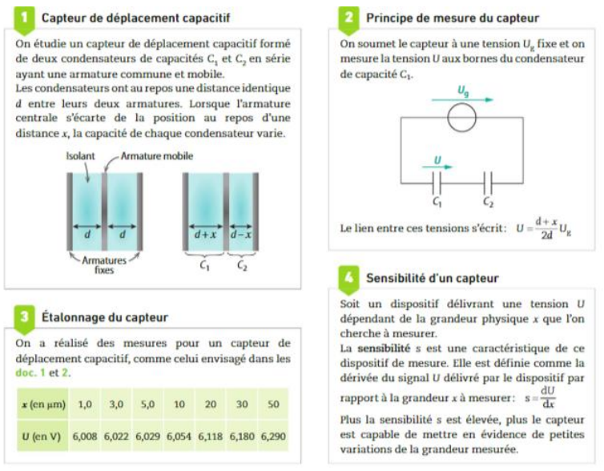
Doc. 1 — Capteur de déplacement capacitif
On étudie un capteur de déplacement capacitif formé de deux condensateurs de capacités C₁ et C₂ en série ayant une armature commune et mobile.
Les condensateurs ont au repos une distance identique d entre leurs deux armatures. Lorsque l'armature centrale s'écarte de la position au repos d'une distance x, la capacité de chaque condensateur varie.
Doc. 2 — Principe de mesure du capteur
On soumet le capteur à une tension Ug fixe et on mesure la tension U aux bornes du condensateur de capacité C₁.
Le lien entre ces tensions s'écrit : U = (d + x)/(2d) × Ug
Doc. 3 — Étalonnage du capteur
On a réalisé des mesures pour un capteur de déplacement capacitif, comme celui envisagé dans les Docs 1 et 2.
x (en µm)
1,0
3,0
5,0
10
20
30
50
U (en V)
6,008
6,022
6,029
6,054
6,118
6,180
6,290
Doc. 4 — Sensibilité d'un capteur
Soit un dispositif délivrant une tension U dépendant de la grandeur physique x que l'on cherche à mesurer.
La sensibilité s est une caractéristique de ce dispositif de mesure. Elle est définie comme la dérivée du signal U délivré par le dispositif par rapport à la grandeur x à mesurer : s = dU/dx
Plus la sensibilité s est élevée, plus le capteur est capable de mettre en évidence de petites variations de la grandeur mesurée.
Pour l'étude d'un capteur capacitif de déplacement (Docs 1 et 2), on a réalisé des mesures d'étalonnage (Doc. 3).
1.
À l'aide du Doc. 3, placer les points d'étalonnage sur un graphique représentant U en fonction de x. Tracer la droite-modèle.
Placez x en abscisse et U en ordonnée. Les points doivent être quasiment alignés : la droite-modèle est celle qui passe au mieux par l'ensemble des points (ajustement affine).
2.
Déterminer les valeurs des paramètres d et Ug (Doc. 2).
Réécrivez la relation U = (d+x)/(2d) × Ug sous forme affine U = a·x + b, avec a = Ug/(2d) et b = Ug/2. Identifiez a et b à partir du graphique (coefficient directeur et ordonnée à l'origine), puis remontez à d et Ug.
3.
Montrer que la sensibilité s du capteur décrit dans le Doc. 1 est la même pour toute valeur de l'écart x à la position de repos. Calculer la valeur de s.
s = dU/dx. Dérivez l'expression U = (d+x)/(2d) × Ug par rapport à x : le résultat ne dépend-il de x ? Utilisez les valeurs de d et Ug trouvées en question 2 pour calculer s numériquement.
4.
Montrer que la sensibilité d'un tel capteur dépend de la distance d au repos. La sensibilité est-elle meilleure pour les petites ou les grandes valeurs de d ? Quelle limitation cela impose-t-il à la valeur de la sensibilité ?
Regardez l'expression de s trouvée en question 3 : comment varie-t-elle quand d diminue ? Mais physiquement, d peut-il être réduit indéfiniment (pensez à l'écart x et au risque de contact entre armatures) ?
5.
Si le dispositif de mesure de la tension U est précis au millivolt près, quelle est la plus petite variation de x que l'on peut espérer mesurer ?
La plus petite variation détectable ΔU vaut 1 mV. Utilisez s = ΔU/Δx pour en déduire Δx minimal détectable.
6.
Pour quelle gamme de déplacements l'utilisation du capteur proposé est-elle adaptée ?
Repartez de la réponse à la question 5 (limite basse, résolution) et du Doc. 3 (limite haute, gamme des x testés à l'étalonnage où la relation reste linéaire).
7.
Quels sont les avantages et les inconvénients d'une sensibilité élevée pour ce capteur ?
Une sensibilité élevée améliore la détection des petites variations (question 5), mais rappelez-vous la limitation identifiée en question 4 sur la valeur de d.
Activité 3 : TP — Introduction à Arduino
Capacité expérimentale : utiliser un microcontrôleur.
I. Présentation de la carte Arduino
a. Constitution
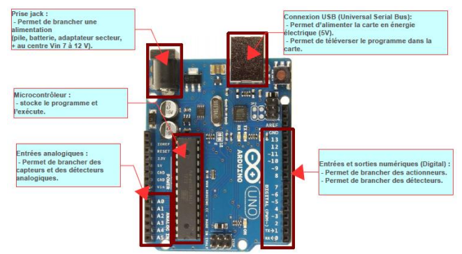
b. Les entrées et sorties numériques : D0 à D13
Chacun des connecteurs D0 à D13 peut être configuré par programmation en entrée ou en sortie. Il est ainsi possible de connecter côte à côte des capteurs logiques (interrupteurs) et des actionneurs (LED, buzzer...).
Les signaux véhiculés sont des signaux logiques : HAUT (5 V) ou BAS (0 V) par rapport à la masse GND.
Attention : les connecteurs ne peuvent pas fournir en sortie un courant supérieur à 40 mA — il est donc interdit de brancher directement un moteur sur une sortie logique.
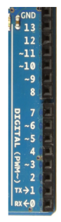
c. Les entrées analogiques A0 à A5
Contrairement aux entrées/sorties numériques (2 états), les six entrées analogiques A0 à A5 peuvent admettre 1024 valeurs comprises entre 0 et 5 V, soit une précision d'environ 5 mV (≈ 5 V / 1024).
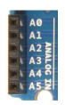
d. Comment y connecter des capteurs ?
Une plaque d'essai permet de réaliser des montages électroniques sans soudure, à l'aide de « straps » (fils de cuivre souples).
Les 5 trous d'une même ligne sont reliés par une barre métallique ; de même, les 25 trous des colonnes externes « + » et « − » sont reliés entre eux.
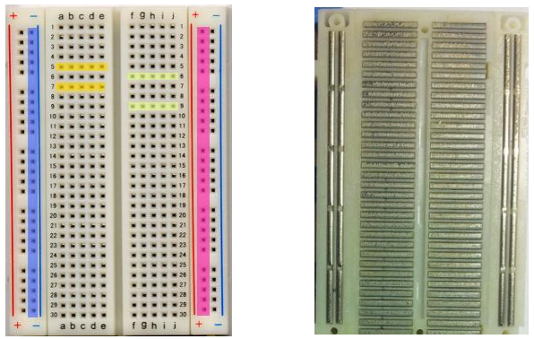
II. Prise en main
1. Tester la carte
Pour vérifier que la carte fonctionne, faire clignoter la LED de test sur la carte Arduino.
Étapes : ouvrir le logiciel Arduino → relier la carte à l'ordinateur par câble USB → dans le menu Outils, vérifier le type de carte (Arduino/Genuino Uno) et le port → dans le menu Fichier, choisir Exemples → Basics → « Blink » → cliquer sur « Téléverser ».
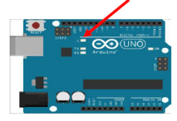
2. Allumer une LED
Réaliser le montage ci-contre, relier la carte à l'ordinateur, vérifier le type de carte et le port, puis recopier et téléverser le programme ci-dessous.
La LED a une anode (+, patte longue) et une cathode (−, patte courte) : respectez le sens de branchement. La résistance de 330 Ω (orange-orange-rouge) protège la LED en limitant le courant.
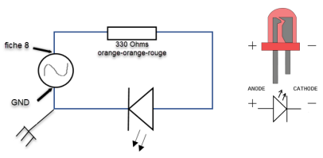
int LED = 8; // la LED est branchée sur la broche 8
void setup()
{
pinMode(LED, OUTPUT); // la broche 8 est une sortie
}
void loop()
{
digitalWrite(LED, HIGH); // la LED est allumée
delay(1000); // délai d'attente de 1 s
digitalWrite(LED, LOW); // la LED est éteinte
delay(1000); // délai d'attente de 1 s
}
III. Produire un signal sonore
On utilise un buzzer en série avec une résistance de 1 kΩ. Réaliser le montage, puis le programme en suivant les 3 mêmes étapes (int, void setup, void loop). Dans void loop, utiliser tone(broche, fréquence) suivi de delay(durée), terminer par noTone(broche).
int LED = 8; // la LED est branchée sur la broche 8
int BUZ = 2; // le BUZZER est branché sur la broche 2
void setup()
{
pinMode(LED, OUTPUT); // la broche 8 est une sortie
pinMode(BUZ, OUTPUT); // la broche 2 est une sortie
}
void loop()
{
digitalWrite(LED, HIGH); // la LED est allumée
delay(1000); // délai d'attente de 1 s
digitalWrite(LED, LOW); // la LED est éteinte
delay(100); // délai d'attente
tone(BUZ, 450); // le BUZZER est allumé
delay(100); // délai d'attente
noTone(BUZ); // le BUZZER est éteint
delay(100); // délai d'attente
}
1.
Pour une fréquence de 440 Hz, tester les limites basse et haute de votre audition.
Modifiez la valeur de fréquence dans tone(BUZ, ...) et téléversez à chaque essai : diminuez progressivement jusqu'à ne plus entendre le son (limite basse), puis augmentez jusqu'à la limite haute. L'oreille humaine perçoit typiquement entre 20 Hz et 20 000 Hz.
2.
Faire sonner les partitions suivantes et reconnaître les chansons. Répartissez-vous le travail.
Pour chaque note de la partition : repérez son nom (Do, Ré, Mi...) grâce à la clé de sol ou de fa (Doc. annexe), puis lisez sa fréquence dans le tableau selon l'octave indiquée. La durée en delay() se déduit de la valeur de la note (noire/croche/blanche...) et du tempo indiqué (ex. 800 ms pour 1 noire) — une croche vaut la moitié d'une noire, une blanche vaut 2 noires. N'oubliez pas une brève pause silencieuse (noTone + petit délai) entre deux notes répétées pour bien les séparer.
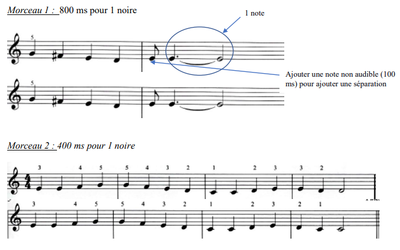
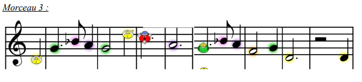
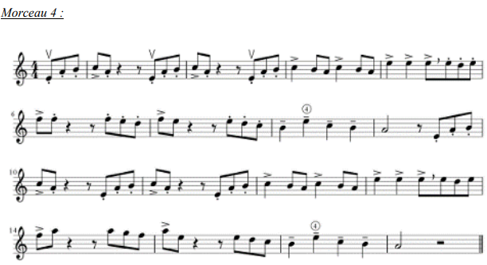
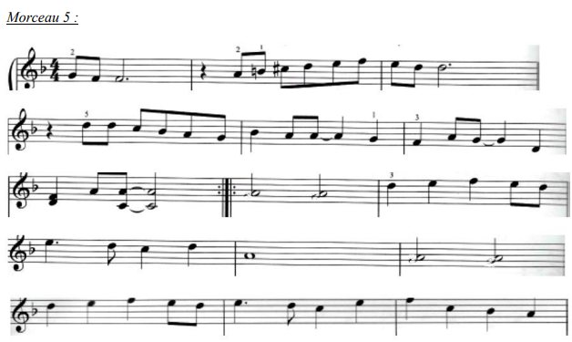
Annexes
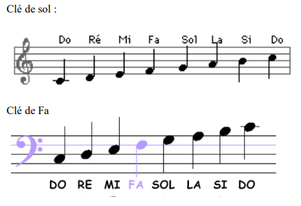
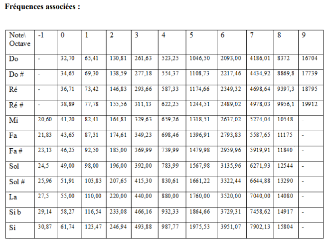
Coup de pouce — photos des montages
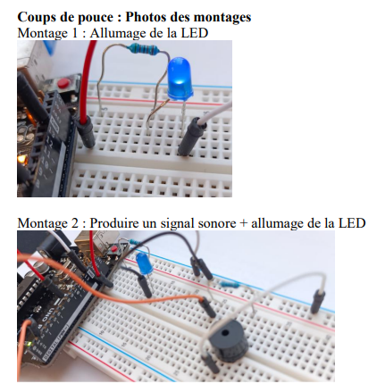
Activité 4 : TP2 — Constante de temps τ d'un circuit RC
Objectifs : étudier la réponse d'un dipôle RC · déterminer τ à l'aide d'un microcontrôleur et de Python, et retrouver la capacité du condensateur.
Document 1 — Le condensateur
Un condensateur est un composant électronique capable de stocker (charge) et relâcher (décharge) de l'énergie électrique dans un circuit. Souvent positionné entre l'alimentation et la masse, il évite des fluctuations de tension (il se décharge lors des chutes de tension et se charge lors des pics de tension).
Un condensateur est caractérisé par sa capacité électrique notée C, exprimée en farads (F). Elle représente la quantité de charges électriques portées par le condensateur pour une tension donnée.
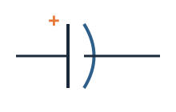
Document 2 — Le circuit RC série
Un circuit RC série est un circuit électrique, composé d'une résistance et d'un condensateur montés en série.
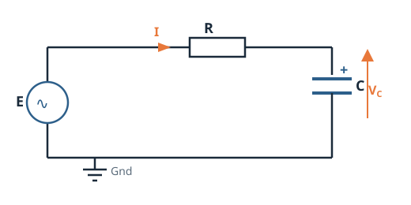
Document 3 — Réponse d'un circuit RC à un échelon de tension
On appelle échelon de tension le passage brutal de la tension appliquée à l'ensemble {R+C} d'une valeur nulle à une valeur non nulle : à t < 0, la tension d'alimentation est nulle, et à partir de t = 0 elle est égale à une constante E.
Le condensateur initialement déchargé se charge. Au cours de sa charge, la tension VC à ses bornes s'écrit :
VC = E × (1 − e−t/RC)
Le produit RC est homogène à une durée appelée constante de temps, notée τ et exprimée en s.
Au cours de la charge d'un condensateur à travers une résistance R sous une tension E :
à t = τ, VC ≈ 0,63×E (soit 63 % de E) ;
à t = 3τ, VC ≈ 0,95×E (soit 95 % de E) ;
à t = 5τ, VC ≈ 0,99×E (soit 99 % de E) — le condensateur est pratiquement chargé.
La constante de temps donne donc un ordre de grandeur de la durée de charge d'un condensateur.
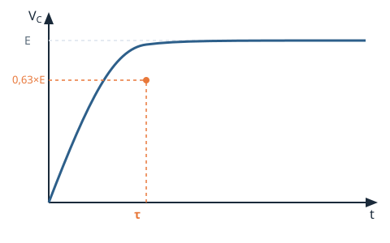
Document 4 — Le montage
Le microcontrôleur alimente le circuit RC série (broche numérique 2) et relève la tension aux bornes du condensateur (broche analogique A0).
Un bouton poussoir en parallèle du condensateur permet une décharge instantanée avant de mesurer la durée de charge. Une fois le condensateur déchargé, la broche 2 passe de l'état BAS à l'état HAUT et alimente le circuit sous 5,0 V.
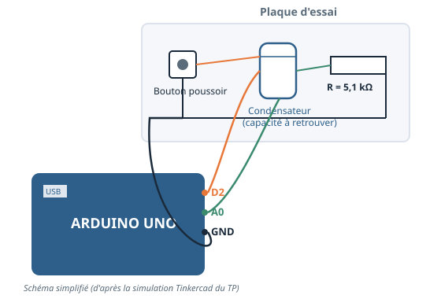
A. Problématique et démarche expérimentale
1.
À l'aide des documents, proposer une démarche expérimentale permettant de trouver comment retrouver la valeur de la capacité du condensateur.
Repartez de la relation liant τ, R et C (Doc. 3). Si vous mesurez τ expérimentalement et que vous connaissez R, quelle grandeur pouvez-vous en déduire ? Comment mesurer τ à partir de la courbe de charge (Doc. 3) ?
B. Étude préliminaire de la charge du condensateur
2.
Réaliser le câblage du montage présenté dans le Doc. 4.
Respectez les 3 couleurs de fils du schéma : la broche D2 alimente le circuit RC, la broche A0 mesure la tension aux bornes du condensateur, GND relie la masse commune. Le bouton poussoir se place en parallèle du condensateur (mêmes deux nœuds).
3.
Compiler et téléverser le programme charge_capa.ino. Suivre la charge du condensateur à partir du moniteur série. Lorsque le message « Fin de la charge du condensateur » s'affiche, décocher le défilement automatique et copier les valeurs de VC et de temps. Coller ces valeurs dans Regressi et représenter VC = f(t).
Le moniteur série affiche deux colonnes séparées par une tabulation (VC puis temps). Sélectionnez uniquement les lignes de valeurs numériques (pas les en-têtes), copiez-collez-les directement dans Regissi via Édition → Coller, puis créez le graphe VC en fonction de temps.
📄 Fichier fourni : charge_capa.ino (extrait)
const int alimentation = 2; // La broche numérique 2 alimente le circuit RC
int Lecture = A0; // La broche analogique A0 mesure la tension aux bornes du condensateur
float temps;
void setup() {
Serial.begin(9600);
pinMode(alimentation, OUTPUT);
digitalWrite(alimentation, LOW);
pinMode(Lecture, INPUT);
}
void loop() {
// décharge du condensateur, puis à t = 0 :
digitalWrite(alimentation, HIGH); // on alimente le circuit RC sous 5 V
// ... mesure et affichage de Vc et temps via le moniteur série ...
}
4.
Déterminer graphiquement la valeur de τ.
Repartez du Doc. 3 : à t = τ, VC ≈ 0,63 × E, avec E = 5,0 V (tension d'alimentation). Repérez sur votre courbe l'ordonnée 0,63 × E, puis lisez l'abscisse t correspondante : c'est τ.
📞 APPEL n°1 — Appeler le professeur pour présenter votre démarche expérimentale ou en cas de difficultés
C. Réponse à la problématique
5.
Ouvrir, compiler et téléverser dans la carte le programme circuit_rc.ino. Comparer la valeur de τ affichée à celle déterminée précédemment.
Ce programme mesure directement la durée nécessaire pour que VC atteigne 63,2 % de la valeur numérique maximale (soit 0,632 × 5 V), ce qui correspond exactement à τ (Doc. 3). Comparez cette valeur à celle trouvée graphiquement en question 4 : sont-elles cohérentes ?
📄 Fichier fourni : circuit_rc.ino (extrait — à compléter en question 7)
const int alimentation = 2;
int Lecture = A0;
float tau;
const int R = 5100; // Valeur de la résistance R en Ohm
void loop() {
// décharge, puis alimentation à 5 V et mesure du temps pour atteindre 63,2 % :
tau = (tempsFin - tempsDebut) * 1e-6; // tau exprimé en s
Serial.print("La constante de temps du circuit RC est égale à : ");
Serial.print(tau, 3);
Serial.println(" s");
// Ajouter la partie de code pour calculer la capacité en microfarad
// en vous inspirant des lignes précédentes (question 7)
}
6.
Enregistrer-sous le script avant toute modification, afin de répondre plus explicitement à la problématique.
Menu Fichier → Enregistrer sous, en gardant une copie de l'original avant de le modifier — utile si vous devez repartir de zéro.
7.
Une fois vérifié par votre professeur, téléverser le programme modifié.
Repartez de la relation reliant τ, R et C (Doc. 3) : C = τ/R. Créez une nouvelle variable décimale (float capa;), calculez-la à partir de tau et de R (déjà défini dans le programme), en pensant au facteur de conversion vers les microfarads (1 F = 10⁶ µF). Affichez le résultat avec Serial.print(), sur le même modèle que l'affichage de tau juste au-dessus.
📞 APPEL n°2 — Appeler le professeur pour présenter votre travail ou en cas de difficultés
📞 APPEL n°3 — Appeler le professeur pour présenter les modifications apportées au programme
8.
Répondre à la problématique.
Votre réponse doit relier : la mesure de τ par le microcontrôleur, la relation C = τ/R, et la valeur de C ainsi obtenue — en la comparant à celle déduite graphiquement en question 4.
D. Prolongement : étude statistique
Document 5 — Extrait de la fiche technique du condensateur
Plage de température
−40 °C à +85 °C
Capacité (Capacitance)
100 µF
Tolérance sur la capacité
± 5 %
Document 6 — Protocole pour l'étude statistique de la mesure de C
Ouvrir le programme circuit_rc_stat.ino (enregistrer-sous votre nom avant modification), l'exécuter pour réaliser des mesures consécutives de C, puis relever dans le moniteur série les valeurs numériques (n° de mesure et C en µF — sans les en-têtes), les copier dans un fichier texte, et l'enregistrer au format .csv (séparateur point-virgule) sous le nom « capa-nom élève.csv ».
Ouvrir ensuite Etude_statistique.py sous Anaconda/JupyterLab, l'enregistrer sous votre nom, remplacer le nom du fichier capa.csv par le vôtre, puis exécuter le programme.
📄 Fichier fourni : circuit_rc_stat.ino (extrait)
const int alimentation = 2;
int Lecture = A0;
float tau, capa;
const int R = 5100;
int compteur = 0;
void loop() {
while (compteur < 30) { // nombre de mesures consécutives à réaliser
// décharge, alimentation, mesure de tau, puis :
capa = (tau/R)*1e6; // Calcul de C exprimé en microfarad
Serial.print(compteur);
Serial.print("\t");
Serial.println(capa, 4);
}
}
📄 Fichier fourni : Etude_statistique.py (extrait)
import csv
source = open('capa.csv','r') # à remplacer par votre propre fichier
lecteur = csv.reader(source, delimiter=";")
capa = []
for row in lecteur:
capa.append(float(row[1]))
n = len(capa)
print('Nombre de mesures :', n)
print('Moyenne de C :', mean(capa), ' µF')
s = std(capa, ddof=1) # écart-type non biaisé
print('Ecart-type non biaisé :', s, 'µF')
U = s/sqrt(n) # incertitude-type
print('Incertitude-type sur C :', U, 'µF')
hist([capa], bins=30, edgecolor='blue') # histogramme des mesures
9.
Mettre en œuvre le protocole du Doc. 6. Relever la valeur moyenne de C et l'incertitude-type. Observer l'étendue des mesures grâce à l'histogramme.
Conservez un nombre de décimales cohérent : l'incertitude-type ne doit avoir qu'un chiffre significatif (éventuellement deux), et la moyenne doit être arrondie au même rang décimal que l'incertitude.
10.
Renouveler les étapes du protocole pour 100 puis 200 mesures consécutives.
Dans circuit_rc_stat.ino, modifiez uniquement la condition while (compteur < 30) en remplaçant 30 par 100, puis par 200. Recommencez ensuite tout le protocole du Doc. 6 (nouveau fichier .csv, nouvelle exécution du script Python).
11.
Quelles observations portant sur l'incertitude-type et l'étendue de mesures peut-on réaliser lorsqu'on augmente le nombre de mesures ?
Comparez vos trois valeurs d'incertitude-type (30, 100, 200 mesures) : l'incertitude-type dépend de l'écart-type s et du nombre de mesures n via U = s/√n. Que devient U quand n augmente, même si s reste à peu près constant ?
12.
À l'aide de la fiche technique, donner un intervalle dans lequel se situe la valeur réelle de la capacité.
La tolérance du fabricant (± 5 % autour de 100 µF, Doc. 5) donne un encadrement du type [C₀ − 5%·C₀ ; C₀ + 5%·C₀]. Calculez les deux bornes.
13.
Le résultat de la mesure (valeur moyenne et incertitude-type) est-il cohérent avec les indications de la fiche technique ?
Un résultat de mesure s'écrit sous la forme C = Cmesurée ± U. Il est cohérent avec la fiche technique si l'intervalle [Cmesurée − U ; Cmesurée + U] chevauche l'intervalle de tolérance trouvé en question 12.
14.
Quelle expression de la valeur de la capacité est la plus précise ?
La précision d'une mesure est d'autant meilleure que son incertitude relative (U/Cmesurée) est faible. Comparez cette incertitude relative pour les trois séries (30, 100, 200 mesures).
Exercice 15 — Calculer l'intensité d'un courant électrique
L'évolution de la charge d'un condensateur par une source idéale de courant est décrite par la fonction q(t) = 2,3 × t pour t appartenant à l'intervalle [0, 10 s] et q(t) en µC.
Déterminer la valeur i(t) de l'intensité du courant électrique aux dates 2,0 s, 5,0 s et 8,0 s. Conclure.
L'intensité du courant électrique est définie par i(t) = dq/dt. Ici q(t) est une fonction affine de t : sa dérivée est donc une constante, indépendante de t.
q(t) = 2,3 × t ⟹ i(t) = dq/dt = 2,3 µA, quelle que soit la date t considérée.
Ainsi i(2,0 s) = i(5,0 s) = i(8,0 s) = 2,3 µA.
Conclusion : l'intensité du courant électrique est constante au cours du temps, ce qui est cohérent avec l'énoncé : la charge est assurée par une source idéale de courant, qui délivre par définition un courant d'intensité constante.
Exercice 16 — Estimer l'intensité d'un courant de charge
Lors de la charge ultrarapide du bus Watt system à l'aéroport de Nice, une charge d'environ 200 kC est transférée dans les super condensateurs du bus pendant une durée record de 10 s.
Estimer l'intensité I du courant électrique supposée constante pendant la charge.
Pour un courant d'intensité constante, la charge transférée Q pendant une durée Δt vérifie Q = I × Δt. N'oubliez pas de convertir 200 kC en coulombs avant de calculer.
Q = I × Δt ⟹ I = Q/Δt Q = 200 kC = 2,00 × 10⁵ C et Δt = 10 s I = (2,00 × 10⁵) / 10 = 2,0 × 10⁴ A (soit 20 kA).
Exercice 20 — Calculer une capacité sans calculatrice
La charge stockée dans un condensateur est de 0,24 nC lorsqu'il est chargé sous une tension de 3,0 V.
Calculer, en pF, la valeur de sa capacité C.
La capacité d'un condensateur relie la charge Q qu'il porte à la tension U à ses bornes : Q = C × U. Convertissez 0,24 nC en pF avant de diviser, cela évite les puissances de dix compliquées (1 nC = 1000 pF).
Q = C × U ⟹ C = Q/U Q = 0,24 nC = 240 pC et U = 3,0 V C = 240 / 3,0 = 80 pF.
Exercice 21 — Charger un condensateur à courant constant
La charge d'un condensateur se fait avec un générateur de courant délivrant un courant d'intensité constante I = 0,010 mA. La représentation graphique de l'évolution de la tension uC aux bornes du condensateur est donnée ci-contre.
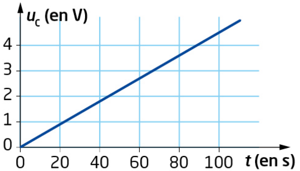
a. Donner l'expression de la charge q(t) stockée dans le condensateur à la date t en fonction de t et de I.
Pour un courant d'intensité constante I, la charge accumulée depuis l'instant initial (condensateur déchargé) est proportionnelle au temps écoulé : q(t) = I × t.
b. En déduire l'expression de la tension uC(t) en fonction de I, t et de la capacité C du condensateur.
Utilisez la relation entre charge et tension aux bornes d'un condensateur : q = C × uC, puis remplacez q(t) par l'expression trouvée en a.
c. Déterminer la valeur de la capacité C du condensateur en µF.
L'expression de b. montre que uC(t) est une fonction affine de t, de coefficient directeur I/C. Lisez ce coefficient directeur graphiquement (deux points bien choisis sur la droite, par exemple à t = 0 et t = 100 s), puis isolez C.
a. Le condensateur est initialement déchargé et chargé sous un courant d'intensité constante I : q(t) = I × t.
b. Comme q = C × uC, on a uC(t) = q(t)/C = (I/C) × t.
c. Graphiquement, la droite passe par l'origine et par le point (100 s ; 5,0 V) : coefficient directeur = I/C = 5,0/100 = 0,050 V·s⁻¹.
Avec I = 0,010 mA = 1,0 × 10⁻⁵ A : C = I / 0,050 = (1,0 × 10⁻⁵) / 0,050 = 2,0 × 10⁻⁴ F = 200 µF.
Exercice 25 — Réaliser une analyse dimensionnelle
Pour un circuit RC série (charge ou décharge) :
a. Définir et exprimer le temps caractéristique du circuit.
Le temps caractéristique (ou constante de temps) d'un circuit RC est la durée qui donne l'ordre de grandeur de la charge ou de la décharge du condensateur ; elle s'exprime simplement à partir des deux composants du circuit.
b. En utilisant la relation entre charge et tension, la relation entre charge et intensité, ainsi que la loi d'Ohm, vérifier que cette constante est homogène à une durée.
Exprimez séparément l'unité de C à partir de q = C × U, et l'unité de R à partir de la loi d'Ohm U = R × I. Multipliez ensuite les deux unités obtenues, puis utilisez q = I × t pour faire apparaître une durée.
a. Le temps caractéristique (ou constante de temps) d'un circuit RC, noté τ, est la durée qui donne l'ordre de grandeur du temps de charge ou de décharge du condensateur. Il s'exprime par τ = R × C.
b. D'après q = C × U, on a [C] = [q]/[U].
D'après la loi d'Ohm U = R × I, on a [R] = [U]/[I].
Donc [R × C] = ([U]/[I]) × ([q]/[U]) = [q]/[I].
Or q = I × t, donc [q]/[I] = [t].
On a bien [R × C] = [t] : τ = RC est homogène à une durée.
Exercice 27 — Apprendre à rédiger
Pour réaliser l'étude théorique de la charge d'un condensateur de capacité C par une source idéale de tension E à travers une résistance R, on considère le circuit schématisé ci-contre.
a. Reproduire le schéma du circuit et écrire la loi d'Ohm en prenant soin de représenter la flèche tension associée à la tension uR.
Orienter la flèche tension aux bornes de R dans le sens opposé à la flèche qui oriente le courant d'intensité i. Noter (2) la relation obtenue.
b. Écrire la loi des mailles.
Représenter sur le schéma du circuit la maille comme étant une boucle fermée orientée suivant le tracé du circuit dans un sens donné, par exemple dans le sens inverse du sens courant. Dans ce cas, pour être dans le sens de la maille, retourner la flèche tension E et lui affecter la valeur −E. Noter (1) la relation obtenue.
c. Donner la relation entre l'intensité i du courant électrique et la charge q portée par l'armature A du condensateur, ainsi que la relation entre uC, q et C.
Noter (3) et (4) ces relations.
d. Établir l'équation différentielle vérifiée par uC.
Utiliser les relations (2), (3) et (4) pour obtenir l'expression de uR en fonction de R, C et de duC/dt, puis remplacer cette expression dans la relation (1).
a. La flèche tension uR est orientée en sens opposé à la flèche du courant i (convention récepteur). Loi d'Ohm : uR = R × i (relation 2).
b. En parcourant la maille dans le sens inverse du courant (la flèche E est alors retournée, valeur −E) : −E + uR + uC = 0, soit E = uR + uC (relation 1).
c.i = dq/dt (relation 3) ; uC = q/C (relation 4).
d. D'après (4) : q = C × uC. En dérivant et en utilisant (3) : i = C × duC/dt.
D'après (2) : uR = R × i = RC × duC/dt.
En remplaçant dans (1) : E = RC × duC/dt + uC, soit :
RC × duC/dt + uC = E
Exercice 28 — Résoudre une équation différentielle
On considère l'équation différentielle suivante :
duC/dt + (1/τ) × uC = E/τ
À l'instant initial, le condensateur est totalement déchargé.
a. Vérifier que uC(t) = Ae−t/τ + E est solution de cette équation différentielle.
Calculez d'abord duC/dt à partir de l'expression proposée, puis remplacez uC et duC/dt dans le membre de gauche de l'équation différentielle : vous devez retrouver exactement le membre de droite, quelle que soit la valeur de t.
b. Déterminer la constante A.
Utilisez la condition initiale : le condensateur étant totalement déchargé à t = 0, on a uC(0) = 0. Remplacez t par 0 dans l'expression de uC(t) et résolvez.
a. En dérivant uC(t) = Ae−t/τ + E :
duC/dt = −(A/τ) × e−t/τ
En injectant dans le membre de gauche :
duC/dt + (1/τ)×uC = −(A/τ)e−t/τ + (1/τ)×(Ae−t/τ + E) = −(A/τ)e−t/τ + (A/τ)e−t/τ + E/τ = E/τ
On retrouve bien le membre de droite : uC(t) est solution de l'équation différentielle, quelle que soit la constante A.
b. Condensateur initialement déchargé : uC(0) = 0. uC(0) = Ae⁰ + E = A + E = 0
Donc A = −E.
Exercice 33 — Charge d'un condensateur
Le condensateur de capacité C = 1,0 F d'une lampe de poche dynamo se charge par l'intermédiaire d'un générateur réel, de résistance interne r = 6 Ω, que l'on actionne avec une manivelle. Lorsqu'il tourne à vitesse suffisamment élevée, ce générateur produit une tension à vide constante U₀ = 3,6 V.
a. Établir l'équation différentielle vérifiée par uC(t) pendant la charge et montrer qu'elle peut s'écrire sous la forme duC/dt + (1/τ)×uC = U₀/τ où τ = rC est le temps caractéristique du circuit.
Un générateur réel se modélise par une source idéale U₀ en série avec sa résistance interne r. Écrivez la loi des mailles sur ce circuit à une seule maille (générateur + condensateur), exprimez la tension aux bornes de r avec la loi d'Ohm (ur = r × i), puis remplacez i par C × duC/dt (charge du condensateur). Divisez enfin toute l'équation par rC.
b. Montrer que uC(t) = U₀(1 − e−t/τ) est la solution de l'équation différentielle précédente.
Calculez duC/dt à partir de l'expression proposée, remplacez uC et duC/dt dans le membre de gauche de l'équation différentielle, et vérifiez que vous retrouvez bien U₀/τ. Vous pouvez aussi vérifier que cette expression est cohérente avec un condensateur initialement déchargé (uC(0) = 0).
a. Le générateur réel équivaut à une source idéale U₀ en série avec r. Loi des mailles sur l'unique maille : U₀ = ur + uC.
Loi d'Ohm : ur = r × i. Le condensateur se charge, donc i = dq/dt = C × duC/dt.
D'où : U₀ = rC × duC/dt + uC.
En divisant par rC = τ : duC/dt + (1/τ)×uC = U₀/τ.
b. En dérivant uC(t) = U₀(1 − e−t/τ) :
duC/dt = (U₀/τ) × e−t/τ
En injectant dans le membre de gauche :
duC/dt + (1/τ)×uC = (U₀/τ)e−t/τ + (1/τ)×U₀(1 − e−t/τ) = (U₀/τ)e−t/τ + U₀/τ − (U₀/τ)e−t/τ = U₀/τ
On retrouve bien le membre de droite : l'expression proposée est solution de l'équation différentielle. De plus, uC(0) = U₀(1 − 1) = 0, cohérent avec un condensateur initialement déchargé.
Exercice 35 — Étudier la charge d'un condensateur par des mesures manuelles
Un étudiant en physique a récupéré plusieurs supercondensateurs sur une visseuse électrique à charge rapide défectueuse. Il cherche à savoir si l'un des condensateurs est encore utilisable pour réaliser une lampe USB expérimentale et si oui, quelle est la valeur de sa capacité C.
L'étudiant ne dispose que d'un simple multimètre, une pile de 4,5 V, une résistance de 100 Ω et du fil de cuivre pour réaliser un circuit et mesurer l'évolution de la tension uC aux bornes du condensateur au cours du temps durant sa charge.
Il obtient le tableau de mesures suivant :
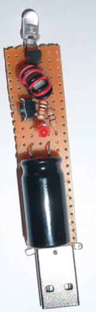
t (en s)
0
30
60
90
120
150
180
250
350
500
800
1100
1500
uC (en V)
0
0,82
1,48
2,02
2,49
2,84
3,14
3,64
4,07
4,34
4,48
4,50
4,50
a. Réaliser le schéma électrique du circuit utilisé par l'étudiant.
Le multimètre, utilisé en voltmètre, se branche toujours en dérivation (en parallèle) aux bornes du composant dont on mesure la tension. Placez la pile, la résistance R et le composant étudié en série sur une seule maille, et le voltmètre en parallèle sur ce composant pour mesurer uC.
b. Justifier que le composant se comporte bien comme un condensateur.
Observez l'allure du tableau de mesures : la tension croît-elle de façon linéaire, ou avec une pente qui diminue progressivement vers une valeur limite ? Comparez à la forme caractéristique de la courbe de charge d'un condensateur (Doc. 3, Activité 4). Comparez aussi la valeur limite atteinte à la tension de la pile.
c. Donner deux méthodes utilisables pour déterminer la valeur de la capacité C de ce condensateur.
Repensez aux deux méthodes graphiques vues en cours pour déterminer τ à partir d'une courbe de charge exponentielle : l'une repose sur la tangente à la courbe à l'instant initial, l'autre sur le repérage d'un pourcentage caractéristique de la tension limite E. Dans les deux cas, τ permet ensuite de remonter à C via τ = RC.
d. Mettre en œuvre l'une des méthodes graphiques pour déterminer C.
Repérez d'abord dans le tableau la valeur asymptotique E atteinte par uC pour les grandes valeurs de t. Calculez ensuite 0,63 × E, puis identifiez dans le tableau la date t pour laquelle uC atteint (à peu près) cette valeur : c'est τ. Utilisez enfin τ = RC pour en déduire C.
a. Circuit série pile (E = 4,5 V) — résistance R — condensateur C, avec un voltmètre branché en dérivation aux bornes du condensateur :
b. La tension uC croît de façon continue mais avec une pente qui diminue progressivement, tendant vers une valeur limite (≈ 4,50 V) : cette allure est caractéristique de la charge d'un condensateur à travers une résistance (Doc. 3, Activité 4). De plus, la valeur limite atteinte est cohérente avec la tension de la pile (E = 4,5 V) : en régime permanent, le condensateur ne laisse plus passer de courant, il n'y a donc plus de chute de tension aux bornes de R, et uC = E. Ce comportement confirme qu'il s'agit bien d'un condensateur.
c. Deux méthodes possibles :
Méthode de la tangente à l'origine : tracer la tangente à la courbe uC(t) à t = 0 ; son intersection avec l'asymptote horizontale uC = E donne l'abscisse τ.
Méthode des 63 % : repérer la date τ pour laquelle uC atteint 63 % de la valeur limite E.
d. Méthode des 63 % : la valeur limite lue dans le tableau est E ≈ 4,50 V.
0,63 × E = 0,63 × 4,50 ≈ 2,84 V.
D'après le tableau, uC = 2,84 V pour t = 150 s : donc τ ≈ 150 s.
Or τ = RC, donc C = τ/R = 150/100 = 1,5 F (valeur cohérente avec un supercondensateur).
Exercice 36 — Machine de Wimshurst
Compétences : utiliser un modèle · mettre en œuvre les étapes d'une démarche · effectuer des procédures courantes.
La machine de Wimshurst se comporte comme un condensateur de capacité de l'ordre de 200 pF. Lorsque sa charge électrique est de l'ordre de 2 µC et que l'écartement entre les boules de l'éclateur est d'environ 1 cm, il se produit une étincelle.
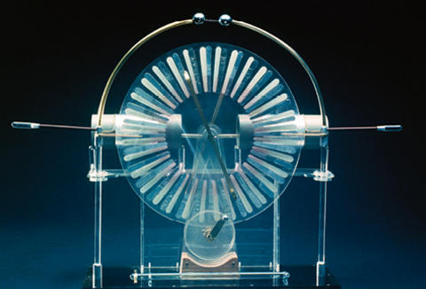
Calculer, en V, l'ordre de grandeur de la tension aux bornes de l'éclateur juste avant l'étincelle.
Utilisez la relation entre la charge Q portée par un condensateur, sa capacité C et la tension U à ses bornes. Convertissez les données en unités du Système international (F et C) avant de calculer.
Q = C × U ⟹ U = Q/C Q = 2 µC = 2 × 10⁻⁶ C et C = 200 pF = 200 × 10⁻¹² F = 2,0 × 10⁻¹⁰ F U = (2 × 10⁻⁶) / (2,0 × 10⁻¹⁰) = 1,0 × 10⁴ V (soit environ 10 kV).
Exercice 37 — Défibrillateur cardiaque
Compétences : mobiliser ses connaissances · mettre en œuvre les étapes d'une démarche · effectuer des procédures courantes (calculs).
La tension aux bornes d'un condensateur dans un défibrillateur cardiaque est de 1,5 kV. Lors du choc électrique produit sur le thorax du patient, la charge transférée est 0,30 C. On supposera que le condensateur est totalement déchargé après ce choc.
a. Calculer la capacité C du condensateur utilisé.
Utilisez la relation entre la charge Q portée par un condensateur, sa capacité C et la tension U à ses bornes. Convertissez la tension en volts avant de calculer.
b. Sachant que le thorax peut être modélisé par un conducteur ohmique de résistance R = 75 Ω, estimer la durée du choc.
La décharge du condensateur à travers le thorax (résistance R) suit une décroissance exponentielle caractérisée par le temps τ = RC, qui donne l'ordre de grandeur de la durée du phénomène. Utilisez la valeur de C trouvée en a.
a.Q = C × U ⟹ C = Q/U Q = 0,30 C et U = 1,5 kV = 1,5 × 10³ V C = 0,30 / (1,5 × 10³) = 2,0 × 10⁻⁴ F (soit 200 µF).
b. τ = RC = 75 × (2,0 × 10⁻⁴) = 1,5 × 10⁻² s = 15 ms.
Cet ordre de grandeur (quelques dizaines de millisecondes) est cohérent avec la durée réelle d'un choc de défibrillateur.
Exercice 39 — Microphone électrostatique à condensateur
Compétences : utiliser un modèle · mettre en œuvre les étapes d'une démarche · effectuer des procédures courantes (calculs).
Un microphone électrostatique à condensateur est constitué d'une très fine membrane métallique ou de mylar métallisé qui constitue l'une des armatures d'un condensateur. Cette membrane peut se déplacer sous l'effet des variations de la pression acoustique engendrée par une onde sonore. Elle est située à 20,0 µm d'une plaque métallique fixe qui constitue l'autre armature du condensateur. L'air emprisonné entre les deux armatures joue le rôle d'isolant.
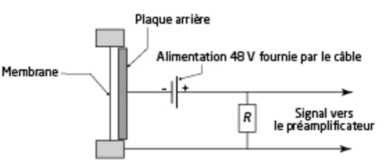
L'expression de la capacité C du condensateur constitué des deux armatures, séparées d'une distance e et dont les surfaces en regard ont chacune une aire S, est :
C = kS/e avec k = 8,85 × 10⁻¹² F·m⁻¹
a. Vérifier que la capacité C du condensateur est égale à 224 pF pour des armatures de diamètre égal à un pouce soit à 2,54 cm.
Calculez d'abord l'aire S du disque à partir du diamètre donné (S = πr² avec r = diamètre/2), convertissez toutes les grandeurs en unités du Système international (mètres), puis appliquez la formule C = kS/e.
b. Déterminer la variation de capacité lorsque la membrane s'enfonce de 0,01 µm sous l'effet d'une variation de pression due à une onde sonore.
Comme C = kS/e, une petite variation de e entraîne une variation relative de C de même ampleur : ΔC/C ≈ −Δe/e. Attention au signe : si la membrane se rapproche de la plaque (e diminue), la capacité augmente.
c. En déduire la variation de charge portée par l'une des armatures du condensateur soumis à une tension constante E = 48 V.
La tension E étant maintenue constante par l'alimentation, utilisez la relation Q = C × E pour relier directement ΔQ à ΔC.
d. La variation de pression produite par l'onde émise par le chanteur se produit pendant une durée de l'ordre de 2 ms. Estimer l'ordre de grandeur de l'intensité i du courant électrique traversant le circuit.
Une intensité moyenne de courant correspond à une quantité de charge transférée divisée par la durée de ce transfert : i ≈ ΔQ/Δt.
e. En déduire l'ordre de grandeur de la tension aux bornes de la résistance R = 10 MΩ et justifier la nécessité d'un préamplificateur pour augmenter l'amplitude du signal produit par le microphone.
Utilisez la loi d'Ohm UR = R × i. Comparez ensuite la valeur obtenue à l'ordre de grandeur d'une tension « utile » en électronique audio (typiquement de l'ordre du volt).
e.UR = R × i = (10 × 10⁶) × (2,7 × 10⁻⁹) ≈ 2,7 × 10⁻² V (environ 27 mV).
Cette tension, de l'ordre de quelques dizaines de millivolts, est très faible comparée aux niveaux habituellement nécessaires pour traiter un signal audio (de l'ordre du volt). Un préamplificateur est donc indispensable pour amplifier ce signal avant tout traitement ultérieur (enregistrement, diffusion...).
Exercice 41 — Retour sur l'ouverture du chapitre
Compétences : rechercher et organiser l'information · effectuer des procédures courantes (calculs) · mettre en œuvre les étapes d'une démarche · interpréter des résultats.
Dans un accéléromètre, l'accélération est mesurée par la différence ΔC de capacité entre les dents voisines des deux peignes, telle que :
ΔC = n × (C₁ − C₂) = nε₀S × (1/d₁ − 1/d₂)
avec n le nombre de « dents » ; ε₀ = 8,85 × 10⁻¹² F·m⁻¹ : permittivité du vide ; S = 2,25 × 10⁻⁸ m² : aire de la surface des peignes en regard ; d₁ : distance entre les armatures de la capacité C₁ ; d₂ : distance entre les armatures de la capacité C₂.
Lorsque les peignes sont centrés l'un par rapport à l'autre : d₁ = d₂ = d = 5,0 µm.
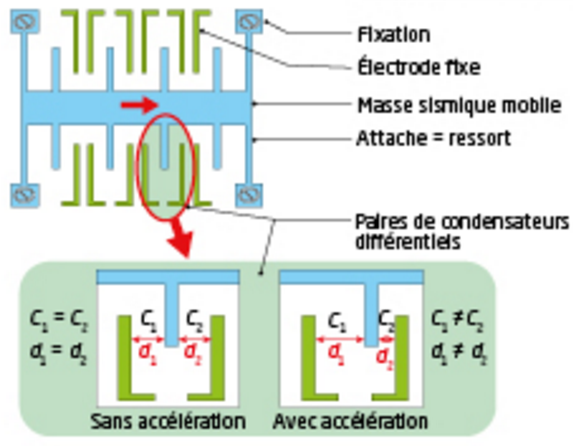
a. Déterminer la variation de capacité lorsque la masse sismique se déplace d'une distance égale à x = 3,0 µm vers la droite par rapport à sa position d'équilibre, et sachant que le nombre de dents vaut n = 50.
Lorsque la masse se déplace de x vers la droite, l'un des entrefers se resserre et l'autre s'élargit d'autant : d₁ = d − x et d₂ = d + x. Calculez ces deux valeurs numériques, puis appliquez directement la formule de ΔC donnée dans l'énoncé.
b. Le montage électrique pour une cellule élémentaire de l'accéléromètre correspond au schéma suivant :
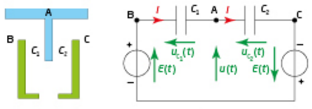
Les condensateurs ayant une armature commune : q₁(t) = q₂(t) = q(t).
En utilisant la loi des mailles et la relation q = C × uC, montrer que l'on a :
Appliquez la loi des mailles séparément sur chacune des deux boucles du schéma : la boucle de gauche (source E(t), C₁, branche u(t)) et la boucle de droite (source E(t) de polarité inversée, C₂, branche u(t)). Remplacez ensuite uC1 par q/C₁ et uC2 par q/C₂ (même charge q sur l'armature commune A), puis isolez q(t) dans chaque équation.
c. En déduire que u(t) = [(C₁ − C₂)/(C₁ + C₂)] × E(t).
Les deux expressions de q(t) obtenues en b. sont égales (même charge q). Écrivez cette égalité, développez, regroupez les termes en u(t) d'un côté et les termes en E(t) de l'autre, puis isolez u(t).
d. Montrer que l'on a u(t) = (x/d) × E(t) et justifier que le système de peigne MEMS peut aussi être utilisé comme un capteur de déplacement de haute précision.
Remplacez C₁ et C₂ par leurs expressions en fonction de ε₀, S, d et x (avec d₁ = d − x et d₂ = d + x) dans le résultat de c., puis simplifiez la fraction obtenue (mettez au même dénominateur numérateur et dénominateur séparément). Pour la justification, réfléchissez à ce que mesure directement u(t) une fois que E(t) est connu.
a.d₁ = d − x = 5,0 − 3,0 = 2,0 µm = 2,0 × 10⁻⁶ m ; d₂ = d + x = 5,0 + 3,0 = 8,0 µm = 8,0 × 10⁻⁶ m.
1/d₁ − 1/d₂ = 1/(2,0×10⁻⁶) − 1/(8,0×10⁻⁶) = 5,0×10⁵ − 1,25×10⁵ = 3,75×10⁵ m⁻¹.
ΔC = nε₀S(1/d₁ − 1/d₂) = 50 × 8,85×10⁻¹² × 2,25×10⁻⁸ × 3,75×10⁵ ≈ 3,7 × 10⁻¹² F (soit 3,7 pF).
b. Boucle de gauche : E(t) = uC1(t) + u(t), avec uC1 = q/C₁, d'où E(t) = q(t)/C₁ + u(t), soit q(t) = C₁ × (E(t) − u(t)).
Boucle de droite (source E(t) orientée en sens opposé) : E(t) = uC2(t) − u(t), avec uC2 = q/C₂, d'où q(t) = C₂ × (E(t) + u(t)).
c. En égalant les deux expressions de q(t) : C₁(E − u) = C₂(E + u)
⟹ C₁E − C₂E = C₁u + C₂u ⟹ E(C₁ − C₂) = u(C₁ + C₂)
D'où u(t) = [(C₁ − C₂)/(C₁ + C₂)] × E(t).
d. Avec C₁ = ε₀S/(d−x) et C₂ = ε₀S/(d+x) : C₁ − C₂ = ε₀S × [2x/(d²−x²)] et C₁ + C₂ = ε₀S × [2d/(d²−x²)]
Donc (C₁−C₂)/(C₁+C₂) = 2x/2d = x/d, d'où u(t) = (x/d) × E(t) (ε₀ et S disparaissent : le résultat est exact, quel que soit x).
Cette relation montre que la tension mesurée u(t) est directement proportionnelle au déplacement x de la masse mobile (à E(t) connue) : en mesurant u(t), on remonte donc immédiatement à x = (u(t)/E(t)) × d, sans passer par l'accélération. Ce même système de peignes différentiels peut donc servir de capteur de déplacement de haute précision, indépendamment de son usage en accéléromètre.
Exercice 42 — Fabriquer un capacimètre avec un microcontrôleur
Compétences : réaliser un schéma de la situation · formuler des hypothèses · mettre en œuvre les étapes d'une démarche · utiliser un modèle · interpréter des résultats.
La réalisation de la mesure de la capacité d'un condensateur peut se faire avec un microcontrôleur, en utilisant le montage ci-contre et le programme Python suivant.
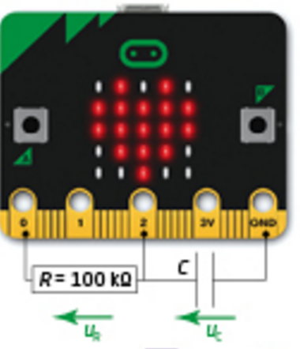
📄 Programme fourni : ch21_498_exo42.py
from microbit import*
x=0
tau=0
pin0.write_digital(0) # décharge condensateur C, broche 0
sleep(8000) # temps décharge totale en ms
print('Charge condensateur E=3,30 V R=100 kOhms')
pin0.write_digital(1) # charge de C sous E et R, broche 0
t0=running_time() # date de début de la charge
while x<1016: # ligne 11 : condition d'arrêt des mesures
x=pin2.read_analog() # mesure de x, broche 2
date=running_time()-t0 # mesure de la date courante
if x<647: # ligne 14
tau=date
uc=round(x*3.3/1023,2)
print('x =',x,' \t date =',date,'ms\t uc=',uc,'V')
sleep(25) # temporisation de 25 ms
print('Resultats: tau =',round(int(tau)),'ms',end='')
print(', C =',round(tau/100,2),'microFarads')
1. Étude théorique du fonctionnement électrique du montage
On modélise le microcontrôleur comme un générateur entre les broches 0 et GND, capable d'être dans deux états :
état 1 : tension nulle, la broche 0 et la masse GND reliées directement ensemble ;
état 2 : source idéale de tension constante E = 3,30 V.
a. Proposer un schéma de montage électrique pouvant modéliser la charge du condensateur (état 2).
En état 2, le microcontrôleur se comporte comme un générateur idéal de tension E constante. Le montage est alors un circuit RC série classique : générateur E, résistance R (entre les broches 0 et 2), condensateur C (entre la broche 2 et GND), identique au circuit déjà rencontré en cours (Doc. 2, Activité 4).
b. Établir l'équation différentielle de l'évolution de la tension uC en fonction du temps lors de la charge.
Utilisez la loi des mailles (E = u_R + u_C), la loi d'Ohm (u_R = R×i) et la relation entre charge et tension du condensateur, en remplaçant i par C×du_C/dt (comme dans l'Activité 4 ou l'exercice 27).
c. Le calcul du condensateur débute à partir de t = 0. Montrer que la solution de l'équation différentielle établie à la question 1.b. est uC(t) = E(1 − e−t/τ) avec τ = RC.
Calculez duC/dt à partir de l'expression proposée, injectez-la dans l'équation différentielle établie en 1.b et vérifiez l'égalité. Vérifiez aussi que la condition initiale uC(0) = 0 est satisfaite (condensateur totalement déchargé après les 8 secondes de décharge imposées par le programme).
2. Exploitation des mesures avec un tableur-grapheur
Les mesures réalisées avec un microcontrôleur, pour un condensateur électrochimique étiqueté 1,0 µF et l'exécution du code source suivant, produisent les résultats suivants :
>>> Charge condensateur E=3,30 V R=100 kOhms
x = 19 date = 1 ms uc= 0.06 V x = 903 date = 215 ms uc= 2.89 V
x = 286 date = 32 ms uc= 0.92 V x = 932 date = 247 ms uc= 3.01 V
x = 470 date = 62 ms uc= 1.52 V x = 956 date = 277 ms uc= 3.08 V
x = 608 date = 92 ms uc= 1.96 V x = 974 date = 307 ms uc= 3.14 V
x = 725 date = 125 ms uc= 2.34 V x = 989 date = 340 ms uc= 3.19 V
x = 797 date = 155 ms uc= 2.57 V x = 1000 date = 370 ms uc= 3.23 V
x = 854 date = 185 ms uc= 2.75 V x = 1007 date = 400 ms uc= 3.25 V
x = 1014 date = 430 ms uc= 3.27 V
x = 1019 date = 462 ms uc= 3.29 V
Resultats: tau = 92 ms, C = 0.92 microFarads
a. À l'aide du tableur-grapheur, représenter l'évolution de la tension uC en fonction du temps.
Placez les valeurs de « date » dans une colonne et les valeurs de « uc » dans une autre, puis utilisez l'outil graphique du tableur (nuage de points) pour représenter uC en fonction de t.
b. En utilisant les fonctionnalités du tableur-grapheur, proposer une fonction uC = f(t) décrite par un modèle du type uC(t) = E(1 − e−t/τ).
Utilisez l'outil de modélisation/régression du tableur-grapheur (fonction exponentielle du type a×(1−exp(−t/b))) pour ajuster une courbe sur le nuage de points, en laissant le logiciel déterminer les paramètres qui correspondent à E et τ.
c. Déterminer la valeur caractéristique τ et en déduire la valeur de la capacité du condensateur.
τ correspond au paramètre b de la modélisation en 2.b, ou peut être lu directement en repérant dans le tableau la date pour laquelle uC atteint 63,2 % de E = 3,30 V (par interpolation entre deux valeurs du tableau si besoin). Utilisez ensuite τ = RC pour en déduire C.
d. Comparer les résultats avec les valeurs obtenues par l'exécution du code source Python et formuler des hypothèses pour expliquer les différences observées.
Comparez votre valeur de τ (et de C) à celle affichée par le programme (92 ms, 0,92 µF). Réfléchissez à la façon dont le programme détermine tau dans la boucle while : capture-t-il exactement l'instant où uC atteint 63,2 % de E, ou un instant légèrement différent ?
3. Analyse de l'algorithme de mesure
La fonction running_time() renvoie le temps écoulé en millisecondes depuis le démarrage du microcontrôleur.
a. En utilisant le modèle proposé à la question 1.c, justifier la condition d'arrêt de la boucle while à la ligne 11, et pourquoi un nombre un peu plus petit que 1023 a été choisi.
D'après le modèle uC(t) = E(1 − e−t/τ), au bout de combien de temps uC atteint-elle exactement E (x = 1023) ? Que se passerait-il pour la durée de la boucle si la condition d'arrêt exigeait x = 1023 exactement ?
b. Justifier la valeur de x choisie à la ligne 14 pour la mesure du temps caractéristique.
Calculez la fraction 647/1023 et comparez-la à la valeur numérique de 1 − e⁻¹. Que représente cette fraction particulière dans la définition du temps caractéristique τ ?
c. Montrer que la valeur obtenue par le programme pour le temps caractéristique sera toujours inférieure à la valeur réelle, et proposer une modification possible du code source pour obtenir un résultat plus proche de la valeur réelle.
Regardez précisément à quel moment la ligne tau=date s'exécute pour la dernière fois : est-ce au moment exact où x franchit 647, ou juste avant, lors du dernier échantillon où x était encore inférieur à 647 ? Entre cet échantillon et le suivant (25 ms plus tard), le seuil réel est franchi à un instant intermédiaire non mesuré directement.
1.a. Schéma identique au circuit RC série déjà rencontré (Doc. 2, Activité 4) : générateur E, résistance R, condensateur C, en série.
1.b. Loi des mailles : E = uR + uC. Loi d'Ohm : uR = R × i. Charge du condensateur : i = C × duC/dt.
D'où E = RC × duC/dt + uC, soit duC/dt + uC/(RC) = E/(RC).
1.c. Avec uC(t) = E(1−e−t/τ) : duC/dt = (E/τ)e−t/τ.
En injectant : (E/τ)e−t/τ + (1/τ)×E(1−e−t/τ) = (E/τ)e−t/τ + E/τ − (E/τ)e−t/τ = E/τ, cohérent avec le membre de droite (car τ = RC). De plus uC(0) = E(1−1) = 0 : la solution est valide.
2.a-b-c. Le nuage de points (date ; uc) et son ajustement par un modèle exponentiel donnent le graphique suivant :
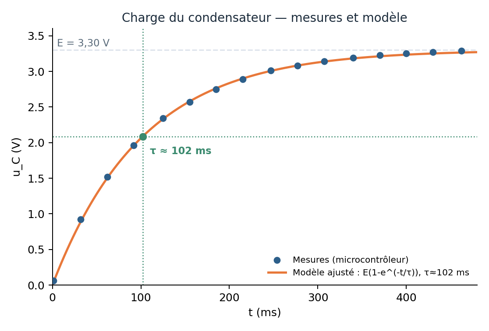
On lit (ou on ajuste) τ ≈ 100-103 ms. Avec R = 100 kΩ : C = τ/R ≈ 102/100 ≈ 1,0 µF, en très bon accord avec la valeur étiquetée du condensateur (1,0 µF).
2.d. Le programme affiche τ = 92 ms et C = 0,92 µF, une valeur inférieure à celle obtenue graphiquement (≈ 1,0 µF) et à la valeur étiquetée. Cet écart s'explique par la méthode de mesure du programme (voir 3.c) : il enregistre systématiquement une date légèrement antérieure au franchissement réel du seuil de 63,2 %, ce qui sous-estime τ. Une incertitude supplémentaire, plus faible, peut aussi provenir de la tolérance de fabrication du condensateur et de la résistance.
3.a. D'après le modèle, uC = E (x = 1023) correspond à e−t/τ = 0, ce qui n'est atteint que pour t → +∞ : la tension s'approche asymptotiquement de E sans jamais l'atteindre exactement en temps fini. Si la condition d'arrêt exigeait x = 1023 exactement, la boucle risquerait de ne jamais se terminer (ou de durer très longtemps). Choisir un seuil légèrement inférieur (1016) permet de garantir un arrêt en temps raisonnable, la tension étant alors « quasiment » chargée.
3.b. 647/1023 ≈ 0,6325 ≈ 1 − e⁻¹ ≈ 0,632 : cette valeur correspond exactement à la fraction de E atteinte par uC à l'instant t = τ (définition même du temps caractéristique). La valeur x = 647 est donc choisie pour repérer numériquement le passage à uC ≈ 0,632×E, c'est-à-dire t = τ.
3.c. Dans la boucle, l'instruction tau=date ne s'exécute que tant que x < 647 : sa dernière exécution correspond donc à la date du dernier échantillon encore inférieur au seuil, juste avant que celui-ci ne soit franchi. Le franchissement réel du seuil (x = 647, soit uC = 0,632×E) se produit en réalité à un instant compris entre cette dernière date et la date de l'échantillon suivant (25 ms plus tard), qui n'est jamais mesuré directement. La valeur enregistrée par le programme est donc systématiquement inférieure ou égale à la valeur réelle de τ, jamais supérieure.
Une modification possible consiste à interpoler entre le dernier échantillon avant le seuil (t₁, x₁) et le premier échantillon après le seuil (t₂, x₂) pour estimer plus précisément l'instant de franchissement, par exemple :
while x<1016:
x=pin2.read_analog()
date=running_time()-t0
if x<647:
t1=date # dernière date avant le seuil
elif tau==0:
tau=(date+t1)/2 # approximation par interpolation
# autour du franchissement de 0,632×E
uc=round(x*3.3/1023,2)
sleep(25)
Exercice 43 — Détecteur de pluie capacitif et écran tactile
Compétences : réaliser un schéma de la situation · effectuer des procédures courantes · mettre en œuvre les étapes d'une démarche · interpréter des résultats.
Les détecteurs de pluie capacitifs sont utilisés dans de nombreuses applications. Le principe de fonctionnement de ce capteur repose sur la variation de la capacité d'un condensateur en fonction du taux d'humidité relative de l'air (degré d'hygrométrie).
La présence d'un dispositif de chauffage intégré permet de maintenir le capteur sec en vaporisant les faibles quantités d'eau présentes sur sa surface. Ceci évite les erreurs de communication dues au brouillard ou à des phénomènes de condensation (rosée du matin).
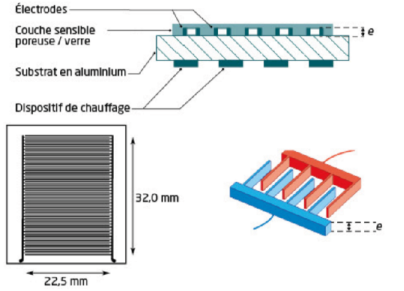
1. Modélisation du capteur
a. Réaliser un schéma explicatif permettant de justifier que ce capteur puisse se modéliser par l'association de condensateurs en dérivation.
Représentez les doigts du peigne interdigité comme une succession d'électrodes alternées : chaque paire de doigts voisins (l'un relié à la borne A, l'autre à la borne B) forme un petit condensateur élémentaire. Comme tous les doigts reliés à A sont connectés entre eux (idem pour B), tous ces condensateurs élémentaires partagent les deux mêmes bornes A et B.
b. La cellule capacitive est assimilée à une association de 80 condensateurs en dérivation dont les capacités s'ajoutent. Lorsque le capteur est en air sec à 0 % d'humidité relative, la capacité totale de l'ensemble vaut Ctot = 100 pF. La distance d entre les armatures vaut 0,1 mm et chaque condensateur est assimilable à un condensateur plan dont la capacité est donnée par l'expression C = kS/d avec k = 4,4 × 10⁻¹¹ SI et S l'aire de la surface des armatures en regard l'une de l'autre.
Évaluer l'épaisseur e des armatures d'un condensateur de la cellule capacitive, de dimensions 22,5 mm par 32,0 mm.
Utilisez Ctot = n × k × S/d (association en dérivation de n = 80 condensateurs identiques) pour isoler l'aire S d'un doigt. Reliez ensuite S à l'épaisseur e recherchée via S = L × e, où L est la longueur des doigts en regard (prendre L = 32,0 mm, la dimension du peigne dans le sens de la longueur des doigts).
2. Évolution théorique lors de la charge
a. Lorsque le dispositif de chauffage n'est pas en fonction, la capacité du condensateur varie en fonction du taux d'humidité relative de l'air. Pour mesurer la capacité du condensateur, on le charge avec un générateur idéal de tension E = 5,0 V à travers une résistance R = 10,0 kΩ. Proposer le schéma d'un montage pour réaliser l'expérience.
Circuit RC série classique : générateur idéal E, résistance R, condensateur C (le capteur), comme déjà rencontré en cours et dans les exercices précédents.
b. Établir l'équation différentielle de l'évolution de la tension uC(t) aux bornes du condensateur en fonction du temps, et établir l'expression de sa solution en supposant que le condensateur est déchargé au début de la charge.
Même démarche que dans l'Activité 4 ou les exercices 27/42 : loi des mailles (E = uR + uC), loi d'Ohm (uR = Ri) et i = C×duC/dt.
c. Tracer l'allure théorique du graphe de la tension uC(t) aux bornes du condensateur en fonction du temps pour la valeur C = 100 pF du condensateur, correspondant à un taux d'humidité relative de 0 %.
Calculez d'abord τ = RC avec C = 100 pF et R = 10,0 kΩ, puis tracez une courbe croissante partant de 0, atteignant environ 63 % de E à l'instant τ, et se rapprochant de E pour t ≥ 5τ.
3. Exploitation des résultats
a. L'expérience décrite précédemment permet d'obtenir l'enregistrement ci-contre. À l'aide du tableau suivant, estimer le taux d'humidité relative régnant dans la salle au moment de l'expérience.
Repérez sur le graphique l'instant τ pour lequel uC atteint 63 % de la tension maximale E = 5,0 V, puis calculez C = τ/R. Comparez cette valeur au tableau fourni, en interpolant si nécessaire entre deux valeurs du tableau.
Capacité (en pF)
100
180
280
390
> 550
Taux d'humidité relative (en %)
0
25
40
50
100
b. Le détecteur de pluie est aussi équipé d'un capteur de température. Le phénomène de rosée apparaît lorsque la température diminue et lorsque le taux d'humidité relative atteint 100 %. Le programme du microcontrôleur calcule le taux d'humidité à partir de la détermination du temps caractéristique au cours d'un cycle de charge. Indiquer comment le programme de gestion du capteur doit gérer l'élément chauffant pour différencier la pluie continue de la rosée qui pourrait se déposer sur le capteur.
Réfléchissez à ce qui différencie physiquement la rosée (fine pellicule d'eau qui s'évapore facilement une fois chauffée) de la pluie continue (apport d'eau permanent qui persiste malgré le chauffage). Que devient la mesure de capacité juste après un cycle de chauffage dans chacun des deux cas ?
4. Détecteur de pluie et écran tactile
La technologie du capteur précédent est utilisée dans les écrans tactiles : le capteur capacitif est constitué d'un réseau bidimensionnel de fils très fins, invisibles à l'œil nu et intégrés dans le feuilletage de l'écran tactile.
À l'approche d'une couche d'eau ou d'un milieu conducteur comme un doigt, les lignes du champ électrique sont modifiées, ce qui provoque une modification de capacité locale entre fils voisins, qui est alors détectée par un microcontrôleur et convertie en une indication de position sur l'écran.
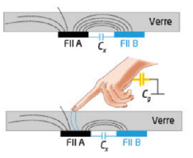
Question. Préciser comment varie le champ électrique entre les deux fils A et B lorsque le doigt touche l'écran, et en déduire comment varie la capacité Cx du condensateur entre A et B.
Le doigt, conducteur relié à un potentiel de référence, capte une partie des lignes de champ électrique initialement dirigées entre A et B (à travers une capacité doigt-écran Cg). Que devient alors le nombre de lignes de champ reliant directement A à B, et donc le couplage capacitif direct entre ces deux fils ?
1.a. Dans le peigne interdigité, les doigts sont alternativement reliés à la borne A et à la borne B. Chaque paire de doigts voisins (un doigt « A », un doigt « B ») constitue un petit condensateur plan élémentaire. Tous les doigts « A » étant reliés entre eux (idem pour les doigts « B »), tous ces condensateurs élémentaires ont leurs deux bornes communes à A et B : c'est exactement la configuration de condensateurs en dérivation (en parallèle).
1.b. Association en dérivation de n = 80 condensateurs identiques : Ctot = n × kS/d, d'où S = Ctot × d / (n × k).
En prenant L = 32,0 mm comme longueur des doigts en regard, S = L × e, donc : e = Ctot × d / (n × k × L) = (100×10⁻¹² × 1,0×10⁻⁴) / (80 × 4,4×10⁻¹¹ × 32,0×10⁻³) ≈ 8,9 × 10⁻⁵ m (soit environ 89 µm). (Épaisseur cohérente avec un film métallique déposé de quelques dizaines de micromètres. Si l'énoncé de votre édition attribue plutôt L = 22,5 mm à la longueur des doigts, remplacez cette valeur dans le calcul : le principe de la méthode reste identique.)
2.a. Circuit RC série : générateur idéal E, résistance R, condensateur C, identique au schéma du Doc. 2 (Activité 4).
2.b. Loi des mailles : E = uR + uC ; loi d'Ohm : uR = Ri ; charge du condensateur : i = C×duC/dt.
D'où RC×duC/dt + uC = E, de solution (condensateur initialement déchargé) : uC(t) = E(1 − e−t/RC).
3.a. Sur l'enregistrement expérimental, on lit graphiquement τ ≈ 5 µs (date à laquelle uC atteint 63 % × 5,0 V ≈ 3,15 V). C = τ/R = (5×10⁻⁶)/(10,0×10³) = 5,0×10⁻¹⁰ F = 500 pF.
En interpolant dans le tableau entre 390 pF (50 %) et > 550 pF (100 %) : taux d'humidité ≈ 50 + (500−390)/(550−390) × 50 ≈ 85 %. (Valeur à ajuster selon la lecture précise du graphique fourni par votre édition.)
3.b. La rosée est une fine pellicule d'eau qui s'évapore rapidement dès que le chauffage est activé, alors que la pluie continue apporte de l'eau en permanence, qui persiste malgré le chauffage. Le programme doit donc activer périodiquement l'élément chauffant, puis mesurer à nouveau la capacité (via τ) juste après : si la capacité rechute rapidement vers sa valeur « sec » (basse), il s'agissait de rosée ; si elle reste élevée malgré le chauffage (l'eau continue d'arriver), c'est de la pluie continue.
4. Lorsque le doigt touche l'écran, il se comporte comme un conducteur relié à un potentiel de référence : il capte (dévie) une partie des lignes de champ électrique qui reliaient initialement les fils A et B. Le nombre de lignes de champ reliant directement A à B diminue donc, ce qui se traduit par une diminution de la capacité Cx entre A et B. C'est cette baisse locale de Cx que le microcontrôleur détecte pour localiser la position du toucher.
Exercice 44 — Réaliser une communication avec un microcontrôleur pour effectuer des mesures
Ressources : programmes Python.
Un élève doit acquérir des données à l'aide d'un microcontrôleur pour déterminer le temps caractéristique d'un dipôle RC et le comparer au résultat qui s'en déduit à une valeur de référence.
Étape 1 — Communication via le port USB et un IDE spécifique au microcontrôleur
Pour des phénomènes statiques ou lents, le programme d'acquisition de données peut être rudimentaire, avec déclenchement et arrêt manuel. La lecture des données écrites dans le port série se fait à l'aide du terminal « Moniteur série » de l'IDE Arduino.
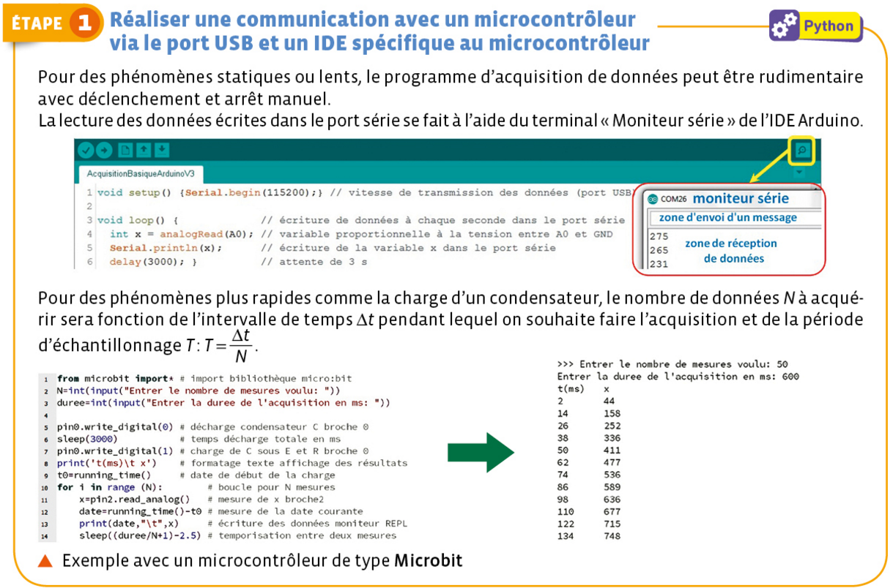
Pour des phénomènes plus rapides comme la charge d'un condensateur, le nombre de données N à acquérir sera fonction de l'intervalle de temps Δt pendant lequel on souhaite faire l'acquisition et de la période d'échantillonnage T : T = Δt/N.
📄 Exemple avec un microcontrôleur de type Microbit : ch21_500_exo44_1.py
from microbit import*
N=int(input("Entrer le nombre de mesures voulu: "))
duree=int(input("Entrer la duree de l'acquisition en ms: "))
pin1.write_digital(0) # décharge condensateur C, broche 1
sleep(5000) # temps décharge totale en ms
pin1.write_digital(1) # charge de C sous E et R, broche 1
print('t(ms)\t x')
t0=running_time() # date de début de la charge
for i in range(N): # boucle pour N mesures
x=pin2.read_analog() # mesure de x, broche 2
date=running_time()-t0
print(date,"\t",x)
sleep((duree/N)-1.5) # temporisation entre deux mesures
Étape 2 — Communication via le port USB et un IDE Python
La bibliothèque serial permet la communication entre l'ordinateur exécutant un programme Python et un périphérique extérieur. Un microcontrôleur envoie des données dans le port série et l'exécution du programme Python ci-dessous se traduit par l'affichage des valeurs dans la console.
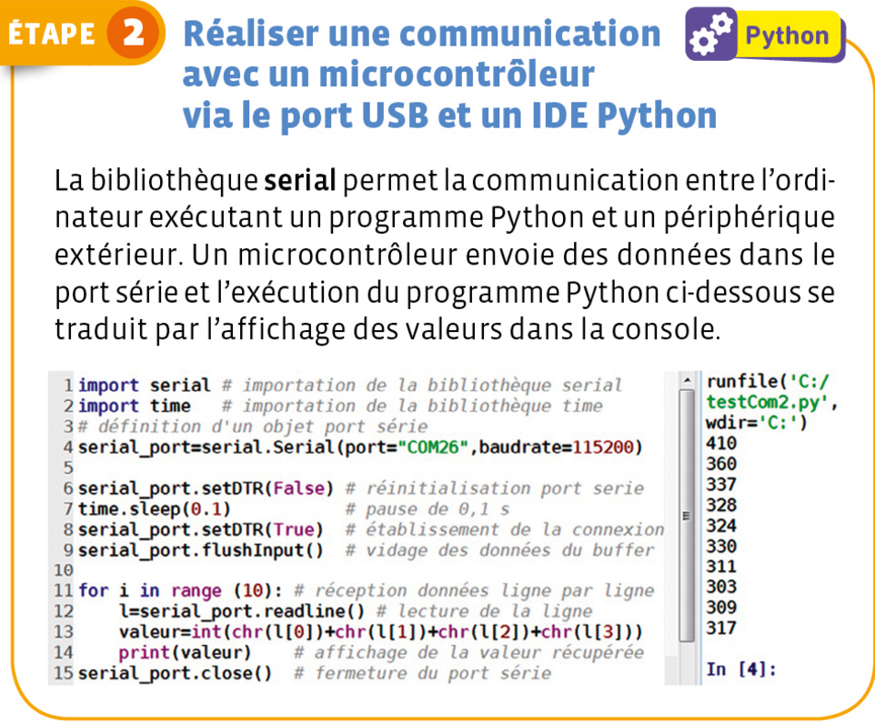
📄 Programme fourni : ch21_500_exo44_2.py (traitement statistique de 1000 mesures)
import serial
import time
import numpy as np
import matplotlib.pyplot as plt
serial_port=serial.Serial(port='COM22',baudrate=115200)
serial_port.setDTR(False)
time.sleep(0.1)
serial_port.setDTR(True)
serial_port.flushInput()
C=[]
for i in range(1000):
l=serial_port.readline()
valeur=float(chr(l[0])+chr(l[1])+chr(l[2])+chr(l[3]))
if i%100==0: print(i,'mesures')
C.append(round(valeur/100,2))
serial_port.close()
Cmoy=np.mean(C)
u=np.std(C,ddof=1)
print('C =',round(Cmoy,2),'nF')
print('Incertitude-type u(C) =',round(u,2),'nF')
plt.hist(C,bins=int((max(C)-min(C))*100),color='red',edgecolor='black')
plt.title('Pour 1000 itérations')
plt.xlabel('Valeur capacité C en nF')
plt.ylabel('Nombre de mesures')
plt.show()
💡 Astuce : les données obtenues en suivant l'une des deux méthodes décrites à l'Étape 1 peuvent être copiées et collées dans un tableur généraliste comme OpenOffice Calc, ou scientifique comme Regressi.
Questions
1. Réaliser l'acquisition de 200 mesures de la tension aux bornes d'un condensateur lors de sa charge, puis représenter le graphe uC = f(t) à l'aide d'un tableur-grapheur.
Avant l'acquisition, estimez un ordre de grandeur de τ = RC à partir des valeurs nominales de vos composants, afin de choisir une durée totale Δt d'acquisition suffisante (par exemple 5 à 10 fois τ, pour observer toute la charge jusqu'au plateau). Avec N = 200 mesures, vérifiez que la période d'échantillonnage T = Δt/N reste petite devant τ (idéalement T ≤ τ/10) pour bien décrire la partie la plus rapide de la courbe. Utilisez ensuite l'un des deux programmes de l'Étape 1 ou 2 pour l'acquisition, puis copiez les couples (t, uC) dans un tableur pour tracer le graphe.
🖥️ Simulation — reproduit le résultat d'une vraie acquisition sur microcontrôleur (E = 5,0 V, R = 10,0 kΩ, C ≈ 1,0 µF, bruit de quantification 10 bits inclus).
2. Réaliser 1000 mesures de la valeur de la capacité d'un condensateur pour tracer l'histogramme de la série de mesures, en évaluer la moyenne C̄ et son incertitude associée u(C̄). Utiliser le quotient |C̄ − Créf|/u(C̄) pour comparer le résultat de la mesure à la valeur d'étiquetage Créf de la capacité.
Utilisez le programme fourni ch21_500_exo44_2.py (ou adaptez-le) pour récupérer 1000 valeurs de C mesurées par le microcontrôleur, calculer leur moyenne C̄ (np.mean) et leur écart-type non biaisé (np.std avec ddof=1), puis en déduire l'incertitude-type u(C̄) = s/√n (attention : ce n'est pas directement l'écart-type affiché par le programme fourni, qui donne l'incertitude-type sur UNE mesure ; il faut diviser par √1000 pour obtenir l'incertitude sur la MOYENNE). Comparez ensuite l'écart |C̄ − Créf| au nombre d'incertitudes-types u(C̄) qu'il représente.
🖥️ Simulation — reproduit le résultat d'une vraie série de 1000 mesures sur un condensateur réel (dispersion de fabrication + bruit de mesure inclus). Chaque clic tire un condensateur légèrement différent, comme en vrai.
1. Le graphe obtenu doit avoir l'allure caractéristique d'une charge de condensateur : une croissance rapide au début, qui ralentit progressivement pour tendre vers un plateau horizontal (valeur E) atteint pour t ≥ 5τ environ. Un choix cohérent de Δt et de N = 200 doit permettre de voir clairement à la fois la montée initiale (pente forte près de t = 0) et le plateau final, sans qu'aucune des deux zones ne soit « écrasée » par un mauvais choix d'échelle de temps. La simulation ci-dessus reproduit ce comportement, bruit de quantification du microcontrôleur inclus.
2. À partir des 1000 mesures de C, on calcule :
la moyenne C̄ (donnée directement par le programme, variable Cmoy) ;
l'écart-type non biaisé s de la série (variable u dans le programme, qui représente l'incertitude-type sur une seule mesure, pas sur la moyenne) ;
l'incertitude-type sur la moyenne : u(C̄) = s/√1000 (à recalculer, cette division n'est pas faite dans le script fourni).
On compare ensuite l'écart normalisé En = |C̄ − Créf| / u(C̄) à la valeur seuil 2 :
si En < 2 : le résultat de la mesure est jugé compatible avec la valeur d'étiquetage Créf, aux incertitudes de mesure près ;
si En ≥ 2 : le résultat est jugé incompatible avec Créf ; il faut alors rechercher une cause d'erreur systématique (mauvais étalonnage, composant hors tolérance, défaut du montage...).
La simulation ci-dessus affiche directement ces trois grandeurs (C̄, u(C̄), En) et la conclusion associée, pour un condensateur tiré aléatoirement à chaque clic.
Exercice 45 — Principe d'un détecteur de position capacitif
Les capteurs capacitifs fonctionnent par détection de la variation de la capacité d'un condensateur en fonction de sa géométrie. Ce type de capteur permet d'effectuer des mesures de positions très précises dans des conditions expérimentales sévères, comme l'épaisseur des disques de frein en fonctionnement.
● Comment expliquer le fonctionnement d'un détecteur de position capacitif ?
Doc. 1 — Capteur capacitif de position expérimental
Le capteur est composé d'un couvercle de boîte de DVD d'épaisseur constante e = 1,0 mm, recouvert d'adhésif métallisé sur sa face côté table, et d'une règle graduée dont la face plane est métallisée avec du ruban adhésif à partir de la graduation 10,0 cm. La règle est guidée et elle glisse sur la surface non métallisée de la boîte de DVD.
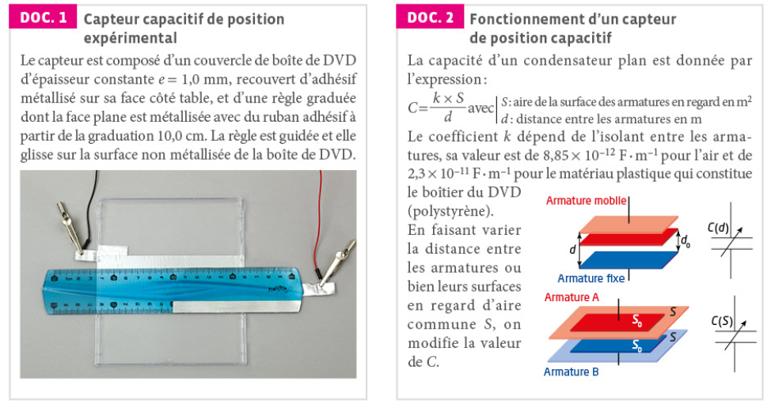
Doc. 2 — Fonctionnement d'un capteur de position capacitif
La capacité d'un condensateur plan est donnée par l'expression :
C = k × S / d
avec S l'aire de la surface des armatures en regard (en m²) et d la distance entre les armatures (en m). Le coefficient k dépend de l'isolant entre les armatures : k = 8,85 × 10⁻¹² F·m⁻¹ pour l'air, k = 2,3 × 10⁻¹¹ F·m⁻¹ pour le matériau plastique qui constitue le boîtier du DVD (polystyrène).
En faisant varier la distance entre les armatures, ou bien leurs surfaces en regard d'aire commune S, on modifie la valeur de C : à S fixée, C(d) décroît en 1/d (hyperbole) ; à d fixée, C(S) est proportionnelle à S (droite passant par l'origine).
Questions
1. Réaliser le protocole fourni par le professeur permettant de mesurer la capacité C du capteur capacitif de position pour une position x = 6,0 cm de la règle.
Reliez les deux surfaces métallisées (règle et couvercle de DVD) à votre capacimètre (ou au montage à microcontrôleur fourni), en veillant à bien positionner la règle à x = 6,0 cm avant de relever la valeur affichée.
🖥️ Simulation — reproduit la lecture d'un vrai capacimètre branché sur le capteur (capacité parasite du montage et bruit de mesure inclus).
📞 APPEL n°1 — Appeler le professeur pour lui présenter les résultats ou en cas de difficulté
2. Proposer un protocole expérimental permettant d'obtenir et de modéliser la courbe d'étalonnage C = f(x) de la capacité C du capteur capacitif en fonction de la valeur x de la position de la règle.
Répétez la mesure de la question 1 pour plusieurs positions x différentes de la règle (en balayant toute la plage utile), en relevant à chaque fois le couple (x, C). Pensez à la façon dont vous représenterez ensuite ces couples pour en tirer un modèle mathématique (cf. Doc. 2).
📞 APPEL n°2 — Appeler le professeur pour lui présenter le protocole ou en cas de difficulté
3. Mettre en œuvre le protocole pour obtenir la courbe d'étalonnage C = f(x) et sa modélisation.
Utilisez un tableur-grapheur pour tracer le nuage de points (x, C), puis testez un modèle affine C = a×x (ou C = a×x + b si vos mesures ne passent pas exactement par l'origine) à l'aide de l'outil de régression du logiciel.
🖥️ Simulation — reproduit une série de mesures de C pour x variant de 0 à 20 cm, avec le même capteur (mêmes défauts) que la mesure de la question 1 ci-dessus.
📞 APPEL n°3 — Appeler le professeur pour lui présenter les résultats ou en cas de difficulté
4. À l'aide du Doc. 2 :
— justifier que l'évolution de la capacité C du condensateur devrait être linéaire en fonction de la position x de la règle, c'est-à-dire du type C = a×x ;
— estimer par un calcul la valeur de la capacité C du capteur capacitif pour la position x = 6,0 cm de la règle.
Dans ce capteur, la distance d entre les armatures (fixée par l'épaisseur e du couvercle de DVD) reste constante quand on déplace la règle : c'est donc l'aire en regard S qui varie avec x (cas « C(S) » du Doc. 2), S étant proportionnelle à x (aire = largeur métallisée constante × longueur en regard x). Pour le calcul numérique, il vous faut la largeur de la partie métallisée de la règle (donnée dans votre protocole/fiche professeur) ; utilisez k = 2,3×10⁻¹¹ F·m⁻¹ (polystyrène du boîtier) et d = e = 1,0 mm.
5. Confronter les réponses précédentes aux mesures effectuées aux questions 1 et 3. Discuter des conditions expérimentales, des sources d'erreurs et du protocole pour justifier la compatibilité :
— du résultat du calcul effectué en 4 avec celui de la mesure réalisée en 1 ;
— de la modélisation justifiée en 4 avec les résultats expérimentaux obtenus en 3.
Pensez aux capacités « parasites » (câbles, connexions, capacimètre lui-même) qui s'ajoutent en dérivation à la capacité du capteur et qui peuvent être loin d'être négligeables face à des capacités de quelques dizaines de pF seulement. Pensez aussi à un éventuel entrefer d'air résiduel entre la règle et le couvercle du DVD (défaut de planéité, poussière...), qui modifierait fortement C puisqu'il s'ajoute en série avec l'isolant polystyrène.
1 à 3. Ces questions sont des questions de mise en œuvre expérimentale : il n'y a pas de valeur numérique de référence universelle, le résultat dépend de votre matériel réel (les simulations ci-dessus vous donnent un résultat plausible, avec capacité parasite et bruit de mesure inclus, pour vous entraîner à l'analyse). Validez vos résultats et votre protocole directement avec votre professeur (appels n° 1 à 3).
4. Justification de la linéarité : dans ce capteur, la distance d entre les deux surfaces métallisées est imposée par l'épaisseur e = 1,0 mm du couvercle de DVD : elle reste constante quel que soit x. Seule l'aire en regard S varie lorsqu'on déplace la règle, car la longueur métallisée en vis-à-vis change avec la position x, alors que la largeur métallisée l reste, elle, constante : S = l × x.
En reportant dans C = kS/d : C = (kl/d) × x, soit une expression du type C = a×x avec a = kl/d constant : la capacité est bien proportionnelle à x (cas « C(S) » du Doc. 2).
Calcul de C pour x = 6,0 cm :C = k × l × x / e, avec k = 2,3×10⁻¹¹ F·m⁻¹ (polystyrène), e = 1,0×10⁻³ m, x = 6,0×10⁻² m.
À titre d'exemple, pour une règle de largeur métallisée l = 2,0 cm = 2,0×10⁻² m (valeur usuelle d'une règle plate — à remplacer par la largeur réelle de votre règle) : S = l×x = 2,0×10⁻² × 6,0×10⁻² = 1,2×10⁻³ m². C = (2,3×10⁻¹¹ × 1,2×10⁻³) / (1,0×10⁻³) ≈ 2,8×10⁻¹¹ F (soit environ 28 pF).
5. Le calcul théorique de la question 4 ne prend en compte que la géométrie idéale du capteur (armatures planes parfaites, isolant homogène). En pratique, plusieurs effets peuvent expliquer un écart avec les mesures des questions 1 et 3 :
Capacités parasites : les câbles de connexion et le capacimètre lui-même ajoutent une capacité parasite en dérivation, non négligeable devant une capacité attendue de seulement quelques dizaines de pF ;
Entrefer d'air résiduel : un défaut de planéité ou la présence de poussière entre la règle et le couvercle de DVD introduirait une fine couche d'air en série avec le polystyrène, ce qui réduirait fortement la capacité mesurée (deux isolants en série se comportent comme deux capacités en série, dominées par la plus petite) ;
Incertitude sur e et sur la largeur métallisée réelle de la règle, ainsi que sur le positionnement précis de x ;
Effets de bord (lignes de champ non strictement uniformes en bordure des armatures), non pris en compte par le modèle idéal du condensateur plan.
La comparaison rigoureuse se fait en calculant l'écart normalisé En = |Ccalculée − Cmesurée| / u(C) : si En < 2, le calcul théorique est jugé compatible avec la mesure ; sinon, il faut chercher lesquelles des sources d'erreur ci-dessus dominent. De même pour la modélisation de la question 3 : si le coefficient directeur a obtenu expérimentalement est compatible (aux incertitudes près) avec a = kl/d attendu théoriquement, le modèle linéaire proposé en 4. est validé par l'expérience.
🎓 Sujets de bac
Bac 2022 · Nouvelle-Calédonie · Jour 25 points · 53 min
Anatomie d'un condensateur
Thème : Circuit RC · Charge, constante de temps, influence de la géométrie sur la capacité
équation différentielleconstante de temps τgéométrie du condensateur
Récapitulatif des notions essentielles et des capacités exigibles du B.O. spécial n° 8 du 25 juillet 2019
(partie « Étudier la dynamique d'un système électrique »).
Partie A.1 – Comportement capacitif
Accumulation de charges de signes opposés sur deux surfaces en regard, séparées par un isolant
Modèle du condensateur plan : C = ε₀ · εᵣ · S / d
C augmente avec la surface S en regard, diminue avec l'écartement d des armatures
Ordres de grandeur usuels : du pF au mF selon la technologie
Partie A.2 – Énergie stockée
Énergie stockée dans un condensateur : E = ½ · C · U²
L'énergie stockée varie comme le carré de la tension à ses bornes
Régime transitoire : évolution de UC entre l'instant initial et l'état final
Régime permanent : atteint pour t ≥ 5τ (UC varie de moins de 1 %)
Lecture graphique : UC(τ) ≈ 0,63·E en charge, ≈ 0,37·U₀ en décharge
Méthode de la tangente à l'origine : elle coupe l'asymptote en t = τ
Partie A.1 (BO) – Capteurs capacitifs
Principe : une grandeur physique (position, niveau, humidité…) fait varier S, d ou εᵣ, donc C
Applications : écran tactile, capteur de niveau, microphone électrostatique, détecteur de proximité
La variation de C peut être exploitée via la mesure du temps caractéristique τ = RC d'un circuit RC associé
📖 Glossaire
Condensateur
Dipôle constitué de deux armatures conductrices séparées par un isolant, capable de stocker des charges électriques de signes opposés.
Capacité C
Grandeur caractérisant l'aptitude d'un condensateur à stocker des charges, en farads (F) ; C = ε₀·εᵣ·S/d pour un condensateur plan.
Comportement capacitif
Propriété d'un dipôle à accumuler des charges de signes opposés sur des surfaces en regard lorsqu'il est soumis à une tension.
Régime transitoire
Phase d'évolution d'un système entre son état initial et son état final, ici la charge ou la décharge du condensateur.
Régime permanent
État atteint après un temps suffisamment long (t ≥ 5τ), où les grandeurs électriques n'évoluent plus (ou quasiment plus).
Temps caractéristique τ
Constante de temps du circuit RC, τ = R·C (en secondes), qui fixe la rapidité de la charge ou de la décharge.
Énergie stockée
Énergie électrique emmagasinée dans le condensateur, E = ½·C·U² (en joules).
Capteur capacitif
Dispositif exploitant la variation de capacité C d'un condensateur (due à S, d ou εᵣ) pour mesurer une grandeur physique.
Méthode de la tangente
Méthode graphique de détermination de τ : la tangente à l'origine de UC(t) coupe l'asymptote horizontale en t = τ.
Dipôle RC
Association en série d'un conducteur ohmique de résistance R et d'un condensateur de capacité C, dont l'étude permet de caractériser les phénomènes de charge et de décharge.
Échelon de tension
Signal de tension qui passe brusquement d'une valeur constante à une autre (par exemple de 0 à E à la fermeture d'un interrupteur), utilisé pour étudier la réponse d'un circuit RC.
Intensité électrique (débit de charges)
Grandeur, en ampère (A), égale au débit de charges électriques à travers une section de circuit : i = dq/dt.
Diélectrique
Matériau isolant placé entre les armatures d'un condensateur, caractérisé par sa permittivité relative εr, qui augmente la capacité par rapport au vide ou à l'air (εr = 1).
Loi des mailles (additivité des tensions)
Dans une maille d'un circuit électrique, la somme algébrique des tensions aux bornes de chaque dipôle est nulle ; elle permet d'établir l'équation différentielle du circuit RC.
Équation différentielle linéaire du 1er ordre
Équation du type τ·dy/dt + y = constante, dont la solution générale s'écrit y(t) = A·e−t/τ + B, les constantes A et B étant déterminées par les conditions initiales et finales.